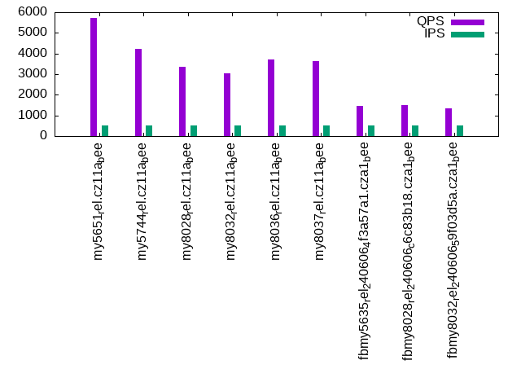

This is a report for the insert benchmark with 20M docs and 1 client(s). It is generated by scripts (bash, awk, sed) and Tufte might not be impressed. An overview of the insert benchmark is here and a short update is here. Below, by DBMS, I mean DBMS+version.config. An example is my8020.c10b40 where my means MySQL, 8020 is version 8.0.20 and c10b40 is the name for the configuration file.
The test server has 8 AMD cores, 16G RAM and an NVMe SSD. It is described here as the Beelink. The benchmark was run with 1 client and there were 1 or 3 connections per client (1 for queries or inserts without rate limits, 1+1 for rate limited inserts+deletes). It uses 1 table. It loads 20M rows per table without secondary indexes, creates 3 secondary indexes per table, then inserts 40m+10m rows per table with a delete per insert to avoid growing the table. It then does 6 read+write tests for 1800s each that do queries as fast as possible with 100,100,500,500,1000,1000 inserts/s and the same for deletes/s per client concurrent with the queries. The database is cached in memory. Clients and the DBMS share one server. The per-database configs are in the per-database subdirectories here.
The tested DBMS are:
The numbers are inserts/s for l.i0, l.i1 and l.i2, indexed docs (or rows) /s for l.x and queries/s for qr100, qp100 thru qr1000, qp1000" The values are the average rate over the entire test for inserts (IPS) and queries (QPS). The range of values for IPS and QPS is split into 3 parts: bottom 25%, middle 50%, top 25%. Values in the bottom 25% have a red background, values in the top 25% have a green background and values in the middle have no color. A gray background is used for values that can be ignored because the DBMS did not sustain the target insert rate. Red backgrounds are not used when the minimum value is within 80% of the max value.
| dbms | l.i0 | l.x | l.i1 | l.i2 | qr100 | qp100 | qr500 | qp500 | qr1000 | qp1000 |
|---|---|---|---|---|---|---|---|---|---|---|
| my5651_rel.cz11a_bee | 100000 | 114943 | 17014 | 12210 | 5711 | 4601 | 5719 | 4626 | 5862 | 4621 |
| my5744_rel.cz11a_bee | 84388 | 152672 | 19503 | 10638 | 4259 | 3747 | 4242 | 3802 | 4268 | 3816 |
| my8028_rel.cz11a_bee | 64309 | 155040 | 19503 | 9524 | 3369 | 3045 | 3367 | 3092 | 3332 | 3073 |
| my8032_rel.cz11a_bee | 56818 | 142858 | 16885 | 8584 | 3052 | 2829 | 3039 | 2808 | 3033 | 2880 |
| my8036_rel.cz11a_bee | 57143 | 138890 | 17384 | 8764 | 3665 | 2824 | 3713 | 2843 | 3764 | 2914 |
| my8037_rel.cz11a_bee | 57143 | 142858 | 17391 | 8696 | 3648 | 2797 | 3643 | 2829 | 3696 | 2897 |
| fbmy5635_rel_240606_4f3a57a1.cza1_bee | 80321 | 87720 | 21727 | 8258 | 1916 | 2694 | 1453 | 2707 | 1446 | 2707 |
| fbmy8028_rel_240606_c6c83b18.cza1_bee | 57471 | 77520 | 19637 | 6988 | 1393 | 2618 | 1507 | 2571 | 1526 | 2496 |
| fbmy8032_rel_240606_59f03d5a.cza1_bee | 53908 | 76046 | 19871 | 6807 | 1225 | 2346 | 1338 | 2389 | 1235 | 2384 |
This table has relative throughput, throughput for the DBMS relative to the DBMS in the first line, using the absolute throughput from the previous table. Values less than 0.95 have a yellow background. Values greater than 1.05 have a blue background.
| dbms | l.i0 | l.x | l.i1 | l.i2 | qr100 | qp100 | qr500 | qp500 | qr1000 | qp1000 |
|---|---|---|---|---|---|---|---|---|---|---|
| my5651_rel.cz11a_bee | 1.00 | 1.00 | 1.00 | 1.00 | 1.00 | 1.00 | 1.00 | 1.00 | 1.00 | 1.00 |
| my5744_rel.cz11a_bee | 0.84 | 1.33 | 1.15 | 0.87 | 0.75 | 0.81 | 0.74 | 0.82 | 0.73 | 0.83 |
| my8028_rel.cz11a_bee | 0.64 | 1.35 | 1.15 | 0.78 | 0.59 | 0.66 | 0.59 | 0.67 | 0.57 | 0.67 |
| my8032_rel.cz11a_bee | 0.57 | 1.24 | 0.99 | 0.70 | 0.53 | 0.61 | 0.53 | 0.61 | 0.52 | 0.62 |
| my8036_rel.cz11a_bee | 0.57 | 1.21 | 1.02 | 0.72 | 0.64 | 0.61 | 0.65 | 0.61 | 0.64 | 0.63 |
| my8037_rel.cz11a_bee | 0.57 | 1.24 | 1.02 | 0.71 | 0.64 | 0.61 | 0.64 | 0.61 | 0.63 | 0.63 |
| fbmy5635_rel_240606_4f3a57a1.cza1_bee | 0.80 | 0.76 | 1.28 | 0.68 | 0.34 | 0.59 | 0.25 | 0.59 | 0.25 | 0.59 |
| fbmy8028_rel_240606_c6c83b18.cza1_bee | 0.57 | 0.67 | 1.15 | 0.57 | 0.24 | 0.57 | 0.26 | 0.56 | 0.26 | 0.54 |
| fbmy8032_rel_240606_59f03d5a.cza1_bee | 0.54 | 0.66 | 1.17 | 0.56 | 0.21 | 0.51 | 0.23 | 0.52 | 0.21 | 0.52 |
This lists the average rate of inserts/s for the tests that do inserts concurrent with queries. For such tests the query rate is listed in the table above. The read+write tests are setup so that the insert rate should match the target rate every second. Cells that are not at least 95% of the target have a red background to indicate a failure to satisfy the target.
| dbms | qr100.L1 | qp100.L2 | qr500.L3 | qp500.L4 | qr1000.L5 | qp1000.L6 |
|---|---|---|---|---|---|---|
| my5651_rel.cz11a_bee | 100 | 100 | 499 | 499 | 998 | 998 |
| my5744_rel.cz11a_bee | 100 | 100 | 499 | 499 | 998 | 998 |
| my8028_rel.cz11a_bee | 100 | 100 | 499 | 499 | 998 | 998 |
| my8032_rel.cz11a_bee | 100 | 100 | 499 | 499 | 998 | 998 |
| my8036_rel.cz11a_bee | 100 | 100 | 499 | 499 | 998 | 998 |
| my8037_rel.cz11a_bee | 100 | 100 | 499 | 499 | 998 | 998 |
| fbmy5635_rel_240606_4f3a57a1.cza1_bee | 100 | 100 | 499 | 499 | 998 | 998 |
| fbmy8028_rel_240606_c6c83b18.cza1_bee | 100 | 100 | 499 | 499 | 998 | 998 |
| fbmy8032_rel_240606_59f03d5a.cza1_bee | 100 | 100 | 499 | 499 | 998 | 998 |
| target | 100 | 100 | 500 | 500 | 1000 | 1000 |
l.i0: load without secondary indexes. Graphs for performance per 1-second interval are here.
Average throughput:
Insert response time histogram: each cell has the percentage of responses that take <= the time in the header and max is the max response time in seconds. For the max column values in the top 25% of the range have a red background and in the bottom 25% of the range have a green background. The red background is not used when the min value is within 80% of the max value.
| dbms | 256us | 1ms | 4ms | 16ms | 64ms | 256ms | 1s | 4s | 16s | gt | max |
|---|---|---|---|---|---|---|---|---|---|---|---|
| my5651_rel.cz11a_bee | 88.959 | 10.933 | 0.106 | 0.002 | 0.002 | 0.087 | |||||
| my5744_rel.cz11a_bee | 3.368 | 96.287 | 0.203 | 0.142 | 0.001 | 0.066 | |||||
| my8028_rel.cz11a_bee | 99.461 | 0.398 | 0.139 | 0.002 | 0.088 | ||||||
| my8032_rel.cz11a_bee | 99.418 | 0.441 | 0.141 | 0.001 | 0.084 | ||||||
| my8036_rel.cz11a_bee | 99.413 | 0.456 | 0.132 | 0.001 | 0.088 | ||||||
| my8037_rel.cz11a_bee | 99.413 | 0.449 | 0.138 | 0.001 | 0.089 | ||||||
| fbmy5635_rel_240606_4f3a57a1.cza1_bee | 99.872 | 0.124 | 0.003 | 0.001 | 0.104 | ||||||
| fbmy8028_rel_240606_c6c83b18.cza1_bee | 99.724 | 0.199 | 0.074 | 0.003 | 0.089 | ||||||
| fbmy8032_rel_240606_59f03d5a.cza1_bee | 99.712 | 0.210 | 0.076 | 0.002 | 0.079 |
Performance metrics for the DBMS listed above. Some are normalized by throughput, others are not. Legend for results is here.
ips qps rps rmbps wps wmbps rpq rkbpq wpi wkbpi csps cpups cspq cpupq dbgb1 dbgb2 rss maxop p50 p99 tag 100000 0 876 3.4 276.6 29.6 0.009 0.035 0.003 0.303 11978 22.8 0.120 18 1.3 16.8 1.9 0.087 100387 88598 my5651_rel.cz11a_bee 84388 0 0 0.0 205.6 23.7 0.000 0.000 0.002 0.288 8487 21.5 0.101 20 1.3 16.8 2.3 0.066 84885 75713 my5744_rel.cz11a_bee 64309 0 0 0.0 206.4 19.3 0.000 0.000 0.003 0.307 7039 21.2 0.109 26 1.3 16.9 2.4 0.088 64427 59831 my8028_rel.cz11a_bee 56818 0 0 0.0 205.1 18.0 0.000 0.000 0.004 0.325 6721 21.3 0.118 30 1.3 16.9 2.4 0.084 57235 53438 my8032_rel.cz11a_bee 57143 0 0 0.0 201.7 18.0 0.000 0.000 0.004 0.322 6443 20.9 0.113 29 1.3 16.9 2.4 0.088 57237 54040 my8036_rel.cz11a_bee 57143 0 0 0.0 199.9 17.8 0.000 0.000 0.003 0.318 6453 21.0 0.113 29 1.3 16.9 2.4 0.089 57334 53939 my8037_rel.cz11a_bee 80321 0 0 0.0 35.6 13.4 0.000 0.000 0.000 0.171 7818 22.5 0.097 22 0.7 1.7 0.2 0.104 80854 71323 fbmy5635_rel_240606_4f3a57a1.cza1_bee 57471 0 0 0.0 34.1 10.9 0.000 0.000 0.001 0.194 5937 22.2 0.103 31 0.7 1.9 0.6 0.089 57568 51442 fbmy8028_rel_240606_c6c83b18.cza1_bee 53908 0 0 0.0 33.4 10.3 0.000 0.000 0.001 0.196 5837 21.8 0.108 32 0.7 1.9 0.6 0.079 53940 48571 fbmy8032_rel_240606_59f03d5a.cza1_bee
l.x: create secondary indexes.
Average throughput:
Performance metrics for the DBMS listed above. Some are normalized by throughput, others are not. Legend for results is here.
ips qps rps rmbps wps wmbps rpq rkbpq wpi wkbpi csps cpups cspq cpupq dbgb1 dbgb2 rss maxop p50 p99 tag 114943 0 8 0.0 871.0 111.7 0.000 0.000 0.008 0.995 2315 11.7 0.020 8 2.8 18.3 3.0 0.001 NA NA my5651_rel.cz11a_bee 152672 0 0 0.0 1554.8 139.0 0.000 0.000 0.010 0.932 9510 11.9 0.062 6 3.0 18.6 3.3 0.001 NA NA my5744_rel.cz11a_bee 155040 0 811 51.1 2394.4 162.1 0.005 0.338 0.015 1.070 9470 43.7 0.061 23 3.0 18.6 3.6 0.003 NA NA my8028_rel.cz11a_bee 142858 0 750 47.3 2041.3 146.9 0.005 0.339 0.014 1.053 8948 44.1 0.063 25 3.0 18.6 3.1 0.003 NA NA my8032_rel.cz11a_bee 138890 0 724 45.6 2242.8 146.5 0.005 0.336 0.016 1.080 9152 43.4 0.066 25 3.0 18.6 3.0 0.003 NA NA my8036_rel.cz11a_bee 142858 0 725 45.7 3106.9 160.1 0.005 0.327 0.022 1.147 10776 43.2 0.075 24 3.0 18.6 3.1 0.003 NA NA my8037_rel.cz11a_bee 87720 0 0 0.0 38.9 14.7 0.000 0.000 0.000 0.172 223 11.8 0.003 11 1.4 2.4 1.7 0.002 NA NA fbmy5635_rel_240606_4f3a57a1.cza1_bee 77520 0 0 0.0 31.3 12.1 0.000 0.000 0.000 0.159 384 11.6 0.005 12 1.4 2.6 2.0 0.003 NA NA fbmy8028_rel_240606_c6c83b18.cza1_bee 76046 0 0 0.0 30.8 11.8 0.000 0.000 0.000 0.160 591 11.7 0.008 12 1.4 2.6 2.1 0.003 NA NA fbmy8032_rel_240606_59f03d5a.cza1_bee
l.i1: continue load after secondary indexes created with 50 inserts per transaction. Graphs for performance per 1-second interval are here.
Average throughput:
Insert response time histogram: each cell has the percentage of responses that take <= the time in the header and max is the max response time in seconds. For the max column values in the top 25% of the range have a red background and in the bottom 25% of the range have a green background. The red background is not used when the min value is within 80% of the max value.
| dbms | 256us | 1ms | 4ms | 16ms | 64ms | 256ms | 1s | 4s | 16s | gt | max |
|---|---|---|---|---|---|---|---|---|---|---|---|
| my5651_rel.cz11a_bee | 93.758 | 6.083 | 0.158 | nonzero | 0.114 | ||||||
| my5744_rel.cz11a_bee | 95.958 | 3.964 | 0.076 | 0.001 | 0.081 | ||||||
| my8028_rel.cz11a_bee | 97.571 | 2.349 | 0.076 | 0.003 | 0.106 | ||||||
| my8032_rel.cz11a_bee | 96.550 | 3.315 | 0.132 | 0.003 | 0.105 | ||||||
| my8036_rel.cz11a_bee | 96.677 | 3.199 | 0.121 | 0.003 | 0.105 | ||||||
| my8037_rel.cz11a_bee | 96.679 | 3.188 | 0.130 | 0.002 | 0.001 | 0.311 | |||||
| fbmy5635_rel_240606_4f3a57a1.cza1_bee | 99.800 | 0.194 | 0.004 | 0.002 | 0.086 | ||||||
| fbmy8028_rel_240606_c6c83b18.cza1_bee | 99.661 | 0.272 | 0.065 | 0.002 | 0.088 | ||||||
| fbmy8032_rel_240606_59f03d5a.cza1_bee | 99.650 | 0.279 | 0.071 | 0.001 | 0.078 |
Delete response time histogram: each cell has the percentage of responses that take <= the time in the header and max is the max response time in seconds. For the max column values in the top 25% of the range have a red background and in the bottom 25% of the range have a green background. The red background is not used when the min value is within 80% of the max value.
| dbms | 256us | 1ms | 4ms | 16ms | 64ms | 256ms | 1s | 4s | 16s | gt | max |
|---|---|---|---|---|---|---|---|---|---|---|---|
| my5651_rel.cz11a_bee | 97.076 | 2.832 | 0.091 | nonzero | 0.066 | ||||||
| my5744_rel.cz11a_bee | 97.403 | 2.577 | 0.018 | 0.001 | 0.081 | ||||||
| my8028_rel.cz11a_bee | 98.256 | 1.722 | 0.019 | 0.003 | 0.105 | ||||||
| my8032_rel.cz11a_bee | 97.840 | 2.107 | 0.050 | 0.003 | 0.108 | ||||||
| my8036_rel.cz11a_bee | 97.902 | 2.055 | 0.040 | 0.003 | 0.105 | ||||||
| my8037_rel.cz11a_bee | 97.893 | 2.056 | 0.049 | 0.001 | 0.001 | 0.284 | |||||
| fbmy5635_rel_240606_4f3a57a1.cza1_bee | 99.787 | 0.200 | 0.011 | 0.002 | 0.085 | ||||||
| fbmy8028_rel_240606_c6c83b18.cza1_bee | 99.642 | 0.279 | 0.077 | 0.002 | 0.091 | ||||||
| fbmy8032_rel_240606_59f03d5a.cza1_bee | 99.631 | 0.285 | 0.084 | 0.001 | 0.076 |
Performance metrics for the DBMS listed above. Some are normalized by throughput, others are not. Legend for results is here.
ips qps rps rmbps wps wmbps rpq rkbpq wpi wkbpi csps cpups cspq cpupq dbgb1 dbgb2 rss maxop p50 p99 tag 17014 0 503 2.0 1451.6 65.7 0.030 0.118 0.085 3.952 20489 47.1 1.204 221 4.1 19.6 4.8 0.114 18029 5694 my5651_rel.cz11a_bee 19503 0 0 0.0 1642.0 74.5 0.000 0.000 0.084 3.912 16219 53.5 0.832 219 4.1 19.7 5.1 0.081 20377 7042 my5744_rel.cz11a_bee 19503 0 47 0.7 1816.8 70.8 0.002 0.039 0.093 3.718 36617 38.8 1.878 159 4.3 20.1 5.6 0.106 20177 8690 my8028_rel.cz11a_bee 16885 0 41 0.6 1999.9 79.1 0.002 0.039 0.118 4.800 36774 38.6 2.178 183 4.4 20.3 5.8 0.105 17473 7242 my8032_rel.cz11a_bee 17384 0 42 0.7 2075.9 82.2 0.002 0.039 0.119 4.840 36928 38.5 2.124 177 4.3 20.2 5.8 0.105 17980 7192 my8036_rel.cz11a_bee 17391 0 42 0.7 2069.8 81.9 0.002 0.039 0.119 4.824 36954 38.6 2.125 178 4.4 20.2 5.8 0.311 17998 6792 my8037_rel.cz11a_bee 21727 0 95 0.5 109.4 43.2 0.004 0.025 0.005 2.037 9641 44.3 0.444 163 1.6 3.5 7.2 0.086 23391 4495 fbmy5635_rel_240606_4f3a57a1.cza1_bee 19637 0 87 0.5 110.7 42.6 0.004 0.026 0.006 2.221 8890 45.1 0.453 184 1.8 3.9 7.8 0.088 21126 9339 fbmy8028_rel_240606_c6c83b18.cza1_bee 19871 0 92 0.5 121.2 45.9 0.005 0.027 0.006 2.364 9236 47.1 0.465 190 1.7 3.8 8.4 0.078 20527 15033 fbmy8032_rel_240606_59f03d5a.cza1_bee
l.i2: continue load after secondary indexes created with 5 inserts per transaction. Graphs for performance per 1-second interval are here.
Average throughput:
Insert response time histogram: each cell has the percentage of responses that take <= the time in the header and max is the max response time in seconds. For the max column values in the top 25% of the range have a red background and in the bottom 25% of the range have a green background. The red background is not used when the min value is within 80% of the max value.
| dbms | 256us | 1ms | 4ms | 16ms | 64ms | 256ms | 1s | 4s | 16s | gt | max |
|---|---|---|---|---|---|---|---|---|---|---|---|
| my5651_rel.cz11a_bee | 10.881 | 88.836 | 0.086 | 0.197 | 0.001 | 0.052 | |||||
| my5744_rel.cz11a_bee | 0.284 | 98.656 | 0.826 | 0.233 | 0.001 | 0.056 | |||||
| my8028_rel.cz11a_bee | 99.523 | 0.246 | 0.230 | 0.001 | 0.001 | 0.104 | |||||
| my8032_rel.cz11a_bee | 99.377 | 0.367 | 0.254 | 0.001 | 0.001 | 0.106 | |||||
| my8036_rel.cz11a_bee | 99.410 | 0.340 | 0.248 | 0.002 | 0.001 | 0.108 | |||||
| my8037_rel.cz11a_bee | 99.378 | 0.364 | 0.255 | 0.002 | nonzero | nonzero | 0.291 | ||||
| fbmy5635_rel_240606_4f3a57a1.cza1_bee | 0.016 | 99.906 | 0.023 | 0.054 | 0.001 | nonzero | 0.064 | ||||
| fbmy8028_rel_240606_c6c83b18.cza1_bee | 99.823 | 0.089 | 0.082 | 0.005 | nonzero | 0.072 | |||||
| fbmy8032_rel_240606_59f03d5a.cza1_bee | 99.763 | 0.147 | 0.085 | 0.005 | 0.060 |
Delete response time histogram: each cell has the percentage of responses that take <= the time in the header and max is the max response time in seconds. For the max column values in the top 25% of the range have a red background and in the bottom 25% of the range have a green background. The red background is not used when the min value is within 80% of the max value.
| dbms | 256us | 1ms | 4ms | 16ms | 64ms | 256ms | 1s | 4s | 16s | gt | max |
|---|---|---|---|---|---|---|---|---|---|---|---|
| my5651_rel.cz11a_bee | 15.289 | 84.450 | 0.063 | 0.197 | 0.001 | 0.051 | |||||
| my5744_rel.cz11a_bee | 0.779 | 98.129 | 0.860 | 0.232 | 0.001 | 0.056 | |||||
| my8028_rel.cz11a_bee | 99.615 | 0.160 | 0.223 | nonzero | 0.001 | 0.102 | |||||
| my8032_rel.cz11a_bee | 99.520 | 0.229 | 0.249 | 0.001 | 0.001 | 0.102 | |||||
| my8036_rel.cz11a_bee | 99.563 | 0.194 | 0.240 | 0.002 | 0.001 | 0.102 | |||||
| my8037_rel.cz11a_bee | 99.562 | 0.189 | 0.247 | 0.002 | nonzero | nonzero | 0.284 | ||||
| fbmy5635_rel_240606_4f3a57a1.cza1_bee | 99.897 | 0.043 | 0.059 | 0.001 | nonzero | 0.064 | |||||
| fbmy8028_rel_240606_c6c83b18.cza1_bee | 99.594 | 0.314 | 0.086 | 0.006 | nonzero | 0.084 | |||||
| fbmy8032_rel_240606_59f03d5a.cza1_bee | 99.418 | 0.488 | 0.089 | 0.006 | nonzero | 0.075 |
Performance metrics for the DBMS listed above. Some are normalized by throughput, others are not. Legend for results is here.
ips qps rps rmbps wps wmbps rpq rkbpq wpi wkbpi csps cpups cspq cpupq dbgb1 dbgb2 rss maxop p50 p99 tag 12210 0 2181 8.5 1052.6 45.9 0.179 0.715 0.086 3.851 96316 44.9 7.888 294 4.1 19.6 4.8 0.052 12191 11233 my5651_rel.cz11a_bee 10638 0 0 0.0 965.0 41.5 0.000 0.000 0.091 3.996 44615 42.2 4.194 317 4.1 19.7 5.1 0.056 10638 9884 my5744_rel.cz11a_bee 9524 0 0 0.0 1074.1 38.5 0.000 0.000 0.113 4.141 53515 35.7 5.619 300 4.3 20.1 5.6 0.104 9510 8501 my8028_rel.cz11a_bee 8584 0 0 0.0 1148.5 42.0 0.000 0.000 0.134 5.007 51193 35.9 5.964 335 4.4 20.3 5.9 0.106 8600 7677 my8032_rel.cz11a_bee 8764 0 0 0.0 1170.0 42.8 0.000 0.000 0.133 4.997 51525 35.6 5.879 325 4.3 20.2 5.8 0.108 8784 7821 my8036_rel.cz11a_bee 8696 0 0 0.0 1187.6 43.1 0.000 0.000 0.137 5.075 51409 35.6 5.912 328 4.4 20.2 5.8 0.291 8708 7757 my8037_rel.cz11a_bee 8258 0 35 0.2 99.7 36.9 0.004 0.026 0.012 4.580 34153 41.9 4.136 406 1.5 1.5 8.3 0.064 8256 6038 fbmy5635_rel_240606_4f3a57a1.cza1_bee 6988 0 30 0.2 86.5 31.9 0.004 0.026 0.012 4.669 29170 40.4 4.174 463 1.5 1.7 8.7 0.072 7002 5762 fbmy8028_rel_240606_c6c83b18.cza1_bee 6807 0 30 0.2 86.8 31.5 0.004 0.026 0.013 4.744 28638 40.4 4.207 475 1.5 1.7 9.0 0.060 6810 5753 fbmy8032_rel_240606_59f03d5a.cza1_bee
qr100.L1: range queries with 100 insert/s per client. Graphs for performance per 1-second interval are here.
Average throughput:
Query response time histogram: each cell has the percentage of responses that take <= the time in the header and max is the max response time in seconds. For max values in the top 25% of the range have a red background and in the bottom 25% of the range have a green background. The red background is not used when the min value is within 80% of the max value.
| dbms | 256us | 1ms | 4ms | 16ms | 64ms | 256ms | 1s | 4s | 16s | gt | max |
|---|---|---|---|---|---|---|---|---|---|---|---|
| my5651_rel.cz11a_bee | 97.515 | 2.478 | 0.003 | 0.004 | nonzero | 0.019 | |||||
| my5744_rel.cz11a_bee | 75.966 | 24.033 | 0.001 | 0.003 | |||||||
| my8028_rel.cz11a_bee | 38.514 | 61.485 | 0.001 | nonzero | 0.004 | ||||||
| my8032_rel.cz11a_bee | 20.761 | 79.238 | 0.001 | 0.004 | |||||||
| my8036_rel.cz11a_bee | 60.140 | 39.859 | 0.001 | nonzero | 0.005 | ||||||
| my8037_rel.cz11a_bee | 59.527 | 40.472 | 0.001 | nonzero | 0.005 | ||||||
| fbmy5635_rel_240606_4f3a57a1.cza1_bee | 14.105 | 71.801 | 14.094 | nonzero | 0.005 | ||||||
| fbmy8028_rel_240606_c6c83b18.cza1_bee | 5.471 | 66.112 | 28.417 | nonzero | nonzero | 0.033 | |||||
| fbmy8032_rel_240606_59f03d5a.cza1_bee | 6.017 | 62.462 | 31.520 | 0.001 | nonzero | 0.033 |
Insert response time histogram: each cell has the percentage of responses that take <= the time in the header and max is the max response time in seconds. For max values in the top 25% of the range have a red background and in the bottom 25% of the range have a green background. The red background is not used when the min value is within 80% of the max value.
| dbms | 256us | 1ms | 4ms | 16ms | 64ms | 256ms | 1s | 4s | 16s | gt | max |
|---|---|---|---|---|---|---|---|---|---|---|---|
| my5651_rel.cz11a_bee | 47.667 | 49.972 | 2.361 | 0.034 | |||||||
| my5744_rel.cz11a_bee | 99.444 | 0.556 | 0.012 | ||||||||
| my8028_rel.cz11a_bee | 99.722 | 0.250 | 0.028 | 0.016 | |||||||
| my8032_rel.cz11a_bee | 99.722 | 0.250 | 0.028 | 0.025 | |||||||
| my8036_rel.cz11a_bee | 99.333 | 0.667 | 0.014 | ||||||||
| my8037_rel.cz11a_bee | 99.611 | 0.361 | 0.028 | 0.030 | |||||||
| fbmy5635_rel_240606_4f3a57a1.cza1_bee | 99.583 | 0.417 | 0.008 | ||||||||
| fbmy8028_rel_240606_c6c83b18.cza1_bee | 99.444 | 0.500 | 0.056 | 0.018 | |||||||
| fbmy8032_rel_240606_59f03d5a.cza1_bee | 99.417 | 0.500 | 0.083 | 0.018 |
Delete response time histogram: each cell has the percentage of responses that take <= the time in the header and max is the max response time in seconds. For max values in the top 25% of the range have a red background and in the bottom 25% of the range have a green background. The red background is not used when the min value is within 80% of the max value.
| dbms | 256us | 1ms | 4ms | 16ms | 64ms | 256ms | 1s | 4s | 16s | gt | max |
|---|---|---|---|---|---|---|---|---|---|---|---|
| my5651_rel.cz11a_bee | 48.139 | 50.250 | 1.611 | 0.039 | |||||||
| my5744_rel.cz11a_bee | 99.694 | 0.306 | 0.009 | ||||||||
| my8028_rel.cz11a_bee | 99.722 | 0.278 | 0.015 | ||||||||
| my8032_rel.cz11a_bee | 99.806 | 0.194 | 0.008 | ||||||||
| my8036_rel.cz11a_bee | 99.528 | 0.472 | 0.013 | ||||||||
| my8037_rel.cz11a_bee | 99.750 | 0.250 | 0.008 | ||||||||
| fbmy5635_rel_240606_4f3a57a1.cza1_bee | 99.611 | 0.389 | 0.008 | ||||||||
| fbmy8028_rel_240606_c6c83b18.cza1_bee | 99.528 | 0.444 | 0.028 | 0.018 | |||||||
| fbmy8032_rel_240606_59f03d5a.cza1_bee | 99.528 | 0.417 | 0.056 | 0.019 |
Performance metrics for the DBMS listed above. Some are normalized by throughput, others are not. Legend for results is here.
ips qps rps rmbps wps wmbps rpq rkbpq wpi wkbpi csps cpups cspq cpupq dbgb1 dbgb2 rss maxop p50 p99 tag 100 5711 4 0.0 217.3 6.6 0.001 0.003 2.177 67.208 22694 13.2 3.974 185 4.1 19.6 4.8 0.019 5674 5545 my5651_rel.cz11a_bee 100 4259 0 0.0 144.5 4.2 0.000 0.000 1.448 43.507 16907 13.2 3.970 248 4.1 19.7 5.1 0.003 4203 4026 my5744_rel.cz11a_bee 100 3369 0 0.0 146.6 3.7 0.000 0.000 1.469 37.743 13657 12.7 4.054 302 4.3 20.1 5.7 0.004 3340 3164 my8028_rel.cz11a_bee 100 3052 0 0.0 149.5 3.8 0.000 0.000 1.498 38.801 12673 12.8 4.152 336 4.4 20.3 5.9 0.004 3020 2860 my8032_rel.cz11a_bee 100 3665 0 0.0 163.3 4.1 0.000 0.000 1.636 42.302 15040 13.1 4.104 286 4.3 20.2 5.8 0.005 3628 3436 my8036_rel.cz11a_bee 100 3648 0 0.0 139.5 3.5 0.000 0.000 1.398 36.183 14896 13.1 4.084 287 4.4 20.2 5.8 0.005 3612 3420 my8037_rel.cz11a_bee 100 1916 0 0.0 4.0 0.3 0.000 0.000 0.040 3.380 7451 12.4 3.889 518 1.5 1.5 8.4 0.005 1950 1566 fbmy5635_rel_240606_4f3a57a1.cza1_bee 100 1393 0 0.0 4.4 0.5 0.000 0.000 0.044 4.668 5600 12.6 4.021 724 1.5 1.7 8.8 0.033 1390 1294 fbmy8028_rel_240606_c6c83b18.cza1_bee 100 1225 0 0.0 4.3 0.4 0.000 0.000 0.043 4.227 5144 12.6 4.198 823 1.5 1.7 9.0 0.033 1182 1071 fbmy8032_rel_240606_59f03d5a.cza1_bee
qp100.L2: point queries with 100 insert/s per client. Graphs for performance per 1-second interval are here.
Average throughput:
Query response time histogram: each cell has the percentage of responses that take <= the time in the header and max is the max response time in seconds. For max values in the top 25% of the range have a red background and in the bottom 25% of the range have a green background. The red background is not used when the min value is within 80% of the max value.
| dbms | 256us | 1ms | 4ms | 16ms | 64ms | 256ms | 1s | 4s | 16s | gt | max |
|---|---|---|---|---|---|---|---|---|---|---|---|
| my5651_rel.cz11a_bee | 94.855 | 5.136 | 0.006 | 0.003 | 0.011 | ||||||
| my5744_rel.cz11a_bee | 85.527 | 14.467 | 0.006 | nonzero | 0.005 | ||||||
| my8028_rel.cz11a_bee | 11.317 | 88.681 | 0.001 | nonzero | 0.005 | ||||||
| my8032_rel.cz11a_bee | 12.325 | 87.673 | 0.002 | nonzero | 0.005 | ||||||
| my8036_rel.cz11a_bee | 8.662 | 91.337 | 0.001 | nonzero | 0.004 | ||||||
| my8037_rel.cz11a_bee | 6.361 | 93.638 | 0.001 | nonzero | 0.004 | ||||||
| fbmy5635_rel_240606_4f3a57a1.cza1_bee | 6.102 | 93.894 | 0.003 | 0.001 | 0.010 | ||||||
| fbmy8028_rel_240606_c6c83b18.cza1_bee | 99.994 | 0.006 | 0.001 | 0.010 | |||||||
| fbmy8032_rel_240606_59f03d5a.cza1_bee | nonzero | 99.991 | 0.008 | 0.001 | 0.010 |
Insert response time histogram: each cell has the percentage of responses that take <= the time in the header and max is the max response time in seconds. For max values in the top 25% of the range have a red background and in the bottom 25% of the range have a green background. The red background is not used when the min value is within 80% of the max value.
| dbms | 256us | 1ms | 4ms | 16ms | 64ms | 256ms | 1s | 4s | 16s | gt | max |
|---|---|---|---|---|---|---|---|---|---|---|---|
| my5651_rel.cz11a_bee | 52.361 | 47.167 | 0.472 | 0.019 | |||||||
| my5744_rel.cz11a_bee | 99.472 | 0.528 | 0.010 | ||||||||
| my8028_rel.cz11a_bee | 99.778 | 0.222 | 0.016 | ||||||||
| my8032_rel.cz11a_bee | 99.444 | 0.556 | 0.015 | ||||||||
| my8036_rel.cz11a_bee | 99.500 | 0.472 | 0.028 | 0.024 | |||||||
| my8037_rel.cz11a_bee | 99.500 | 0.500 | 0.014 | ||||||||
| fbmy5635_rel_240606_4f3a57a1.cza1_bee | 99.528 | 0.472 | 0.009 | ||||||||
| fbmy8028_rel_240606_c6c83b18.cza1_bee | 99.389 | 0.556 | 0.056 | 0.018 | |||||||
| fbmy8032_rel_240606_59f03d5a.cza1_bee | 99.306 | 0.639 | 0.056 | 0.018 |
Delete response time histogram: each cell has the percentage of responses that take <= the time in the header and max is the max response time in seconds. For max values in the top 25% of the range have a red background and in the bottom 25% of the range have a green background. The red background is not used when the min value is within 80% of the max value.
| dbms | 256us | 1ms | 4ms | 16ms | 64ms | 256ms | 1s | 4s | 16s | gt | max |
|---|---|---|---|---|---|---|---|---|---|---|---|
| my5651_rel.cz11a_bee | 53.944 | 45.972 | 0.083 | 0.018 | |||||||
| my5744_rel.cz11a_bee | 99.639 | 0.361 | 0.008 | ||||||||
| my8028_rel.cz11a_bee | 99.750 | 0.250 | 0.008 | ||||||||
| my8032_rel.cz11a_bee | 99.639 | 0.361 | 0.009 | ||||||||
| my8036_rel.cz11a_bee | 99.611 | 0.361 | 0.028 | 0.025 | |||||||
| my8037_rel.cz11a_bee | 99.611 | 0.389 | 0.009 | ||||||||
| fbmy5635_rel_240606_4f3a57a1.cza1_bee | 99.611 | 0.389 | 0.009 | ||||||||
| fbmy8028_rel_240606_c6c83b18.cza1_bee | 99.472 | 0.472 | 0.056 | 0.018 | |||||||
| fbmy8032_rel_240606_59f03d5a.cza1_bee | 99.556 | 0.389 | 0.056 | 0.018 |
Performance metrics for the DBMS listed above. Some are normalized by throughput, others are not. Legend for results is here.
ips qps rps rmbps wps wmbps rpq rkbpq wpi wkbpi csps cpups cspq cpupq dbgb1 dbgb2 rss maxop p50 p99 tag 100 4601 4 0.0 2.2 0.1 0.001 0.003 0.022 1.182 18710 13.6 4.066 236 4.1 19.6 4.8 0.011 4541 4299 my5651_rel.cz11a_bee 100 3747 0 0.0 26.7 0.7 0.000 0.000 0.267 7.217 15333 13.9 4.092 297 4.1 19.7 5.1 0.005 3692 3500 my5744_rel.cz11a_bee 100 3045 0 0.0 29.9 0.8 0.000 0.000 0.299 7.771 12682 13.4 4.165 352 4.3 20.1 5.7 0.005 2973 2829 my8028_rel.cz11a_bee 100 2829 0 0.0 31.2 0.8 0.000 0.000 0.312 8.397 12035 13.2 4.255 373 4.4 20.3 5.9 0.005 2717 2589 my8032_rel.cz11a_bee 100 2824 0 0.0 29.9 0.8 0.000 0.000 0.300 8.155 12014 13.5 4.254 382 4.3 20.2 5.8 0.004 2749 2621 my8036_rel.cz11a_bee 100 2797 0 0.0 29.7 0.8 0.000 0.000 0.298 8.088 11900 13.4 4.254 383 4.4 20.2 5.8 0.004 2733 2605 my8037_rel.cz11a_bee 100 2694 23 0.1 4.0 0.4 0.009 0.054 0.040 4.036 11021 13.4 4.091 398 1.5 1.6 8.7 0.010 2653 2445 fbmy5635_rel_240606_4f3a57a1.cza1_bee 100 2618 18 0.1 3.9 0.3 0.007 0.044 0.039 3.149 10861 13.7 4.149 419 1.5 1.8 9.1 0.010 2573 2095 fbmy8028_rel_240606_c6c83b18.cza1_bee 100 2346 17 0.1 4.2 0.4 0.007 0.047 0.042 4.150 9937 13.4 4.235 457 1.5 1.8 9.3 0.010 2333 1934 fbmy8032_rel_240606_59f03d5a.cza1_bee
qr500.L3: range queries with 500 insert/s per client. Graphs for performance per 1-second interval are here.
Average throughput:
Query response time histogram: each cell has the percentage of responses that take <= the time in the header and max is the max response time in seconds. For max values in the top 25% of the range have a red background and in the bottom 25% of the range have a green background. The red background is not used when the min value is within 80% of the max value.
| dbms | 256us | 1ms | 4ms | 16ms | 64ms | 256ms | 1s | 4s | 16s | gt | max |
|---|---|---|---|---|---|---|---|---|---|---|---|
| my5651_rel.cz11a_bee | 97.369 | 2.624 | 0.004 | 0.004 | 0.010 | ||||||
| my5744_rel.cz11a_bee | 75.069 | 24.930 | nonzero | nonzero | 0.004 | ||||||
| my8028_rel.cz11a_bee | 38.349 | 61.650 | 0.001 | nonzero | 0.008 | ||||||
| my8032_rel.cz11a_bee | 19.510 | 80.489 | 0.001 | nonzero | 0.007 | ||||||
| my8036_rel.cz11a_bee | 62.652 | 37.346 | 0.001 | nonzero | 0.008 | ||||||
| my8037_rel.cz11a_bee | 59.002 | 40.997 | 0.001 | nonzero | 0.004 | ||||||
| fbmy5635_rel_240606_4f3a57a1.cza1_bee | 12.054 | 58.449 | 29.497 | nonzero | nonzero | 0.029 | |||||
| fbmy8028_rel_240606_c6c83b18.cza1_bee | 5.889 | 76.690 | 17.420 | 0.001 | nonzero | 0.031 | |||||
| fbmy8032_rel_240606_59f03d5a.cza1_bee | 5.664 | 69.706 | 24.629 | nonzero | nonzero | 0.028 |
Insert response time histogram: each cell has the percentage of responses that take <= the time in the header and max is the max response time in seconds. For max values in the top 25% of the range have a red background and in the bottom 25% of the range have a green background. The red background is not used when the min value is within 80% of the max value.
| dbms | 256us | 1ms | 4ms | 16ms | 64ms | 256ms | 1s | 4s | 16s | gt | max |
|---|---|---|---|---|---|---|---|---|---|---|---|
| my5651_rel.cz11a_bee | 88.711 | 11.200 | 0.089 | 0.021 | |||||||
| my5744_rel.cz11a_bee | 99.333 | 0.667 | 0.014 | ||||||||
| my8028_rel.cz11a_bee | 99.500 | 0.494 | 0.006 | 0.016 | |||||||
| my8032_rel.cz11a_bee | 98.683 | 1.311 | 0.006 | 0.020 | |||||||
| my8036_rel.cz11a_bee | 99.156 | 0.828 | 0.011 | 0.006 | 0.102 | ||||||
| my8037_rel.cz11a_bee | 99.206 | 0.778 | 0.017 | 0.029 | |||||||
| fbmy5635_rel_240606_4f3a57a1.cza1_bee | 99.728 | 0.272 | 0.012 | ||||||||
| fbmy8028_rel_240606_c6c83b18.cza1_bee | 99.583 | 0.339 | 0.078 | 0.019 | |||||||
| fbmy8032_rel_240606_59f03d5a.cza1_bee | 99.456 | 0.456 | 0.089 | 0.019 |
Delete response time histogram: each cell has the percentage of responses that take <= the time in the header and max is the max response time in seconds. For max values in the top 25% of the range have a red background and in the bottom 25% of the range have a green background. The red background is not used when the min value is within 80% of the max value.
| dbms | 256us | 1ms | 4ms | 16ms | 64ms | 256ms | 1s | 4s | 16s | gt | max |
|---|---|---|---|---|---|---|---|---|---|---|---|
| my5651_rel.cz11a_bee | 90.150 | 9.833 | 0.017 | 0.017 | |||||||
| my5744_rel.cz11a_bee | 99.550 | 0.450 | 0.014 | ||||||||
| my8028_rel.cz11a_bee | 99.672 | 0.328 | 0.015 | ||||||||
| my8032_rel.cz11a_bee | 99.611 | 0.389 | 0.014 | ||||||||
| my8036_rel.cz11a_bee | 99.583 | 0.400 | 0.011 | 0.006 | 0.103 | ||||||
| my8037_rel.cz11a_bee | 99.706 | 0.283 | 0.011 | 0.029 | |||||||
| fbmy5635_rel_240606_4f3a57a1.cza1_bee | 99.700 | 0.300 | 0.008 | ||||||||
| fbmy8028_rel_240606_c6c83b18.cza1_bee | 99.583 | 0.344 | 0.072 | 0.018 | |||||||
| fbmy8032_rel_240606_59f03d5a.cza1_bee | 99.522 | 0.394 | 0.083 | 0.018 |
Performance metrics for the DBMS listed above. Some are normalized by throughput, others are not. Legend for results is here.
ips qps rps rmbps wps wmbps rpq rkbpq wpi wkbpi csps cpups cspq cpupq dbgb1 dbgb2 rss maxop p50 p99 tag 499 5719 16 0.1 7.7 0.7 0.003 0.011 0.015 1.439 22348 14.3 3.908 200 4.1 19.6 4.8 0.010 5658 5529 my5651_rel.cz11a_bee 499 4242 0 0.0 48.0 1.8 0.000 0.000 0.096 3.648 16634 14.1 3.922 266 4.1 19.7 5.1 0.004 4186 4012 my5744_rel.cz11a_bee 499 3367 0 0.0 51.4 1.7 0.000 0.000 0.103 3.538 13899 13.6 4.128 323 4.3 20.1 5.7 0.008 3326 3148 my8028_rel.cz11a_bee 499 3039 0 0.0 65.4 2.2 0.000 0.000 0.131 4.547 12989 13.7 4.274 361 4.4 20.3 5.9 0.007 3005 2861 my8032_rel.cz11a_bee 499 3713 0 0.0 64.5 2.2 0.000 0.000 0.129 4.512 15504 14.2 4.175 306 4.3 20.2 5.8 0.008 3662 3484 my8036_rel.cz11a_bee 499 3643 0 0.0 66.9 2.3 0.000 0.000 0.134 4.651 15254 14.1 4.187 310 4.4 20.2 5.8 0.004 3611 3404 my8037_rel.cz11a_bee 499 1453 0 0.0 8.5 2.3 0.000 0.000 0.017 4.820 5828 13.6 4.010 749 1.5 1.8 8.6 0.029 1438 1199 fbmy5635_rel_240606_4f3a57a1.cza1_bee 499 1507 0 0.0 8.4 2.3 0.000 0.000 0.017 4.726 6190 13.7 4.107 727 1.5 2.0 9.1 0.031 1502 1135 fbmy8028_rel_240606_c6c83b18.cza1_bee 499 1338 0 0.0 8.3 2.3 0.000 0.000 0.017 4.626 5722 13.7 4.276 819 1.5 2.0 9.1 0.028 1343 1135 fbmy8032_rel_240606_59f03d5a.cza1_bee
qp500.L4: point queries with 500 insert/s per client. Graphs for performance per 1-second interval are here.
Average throughput:
Query response time histogram: each cell has the percentage of responses that take <= the time in the header and max is the max response time in seconds. For max values in the top 25% of the range have a red background and in the bottom 25% of the range have a green background. The red background is not used when the min value is within 80% of the max value.
| dbms | 256us | 1ms | 4ms | 16ms | 64ms | 256ms | 1s | 4s | 16s | gt | max |
|---|---|---|---|---|---|---|---|---|---|---|---|
| my5651_rel.cz11a_bee | 94.184 | 5.788 | 0.026 | 0.002 | 0.013 | ||||||
| my5744_rel.cz11a_bee | 86.101 | 13.889 | 0.010 | 0.001 | 0.010 | ||||||
| my8028_rel.cz11a_bee | 17.282 | 82.712 | 0.006 | nonzero | 0.008 | ||||||
| my8032_rel.cz11a_bee | 9.972 | 90.023 | 0.005 | nonzero | 0.005 | ||||||
| my8036_rel.cz11a_bee | 11.368 | 88.626 | 0.005 | nonzero | 0.007 | ||||||
| my8037_rel.cz11a_bee | 10.446 | 89.550 | 0.004 | nonzero | 0.005 | ||||||
| fbmy5635_rel_240606_4f3a57a1.cza1_bee | 7.201 | 92.795 | 0.004 | nonzero | 0.005 | ||||||
| fbmy8028_rel_240606_c6c83b18.cza1_bee | nonzero | 99.992 | 0.007 | nonzero | 0.009 | ||||||
| fbmy8032_rel_240606_59f03d5a.cza1_bee | 99.993 | 0.007 | 0.003 |
Insert response time histogram: each cell has the percentage of responses that take <= the time in the header and max is the max response time in seconds. For max values in the top 25% of the range have a red background and in the bottom 25% of the range have a green background. The red background is not used when the min value is within 80% of the max value.
| dbms | 256us | 1ms | 4ms | 16ms | 64ms | 256ms | 1s | 4s | 16s | gt | max |
|---|---|---|---|---|---|---|---|---|---|---|---|
| my5651_rel.cz11a_bee | 86.472 | 13.344 | 0.183 | 0.033 | |||||||
| my5744_rel.cz11a_bee | 99.417 | 0.583 | 0.011 | ||||||||
| my8028_rel.cz11a_bee | 99.483 | 0.517 | 0.015 | ||||||||
| my8032_rel.cz11a_bee | 98.456 | 1.533 | 0.006 | 0.006 | 0.104 | ||||||
| my8036_rel.cz11a_bee | 99.228 | 0.761 | 0.011 | 0.026 | |||||||
| my8037_rel.cz11a_bee | 98.917 | 1.078 | 0.006 | 0.030 | |||||||
| fbmy5635_rel_240606_4f3a57a1.cza1_bee | 99.678 | 0.322 | 0.013 | ||||||||
| fbmy8028_rel_240606_c6c83b18.cza1_bee | 99.450 | 0.467 | 0.083 | 0.018 | |||||||
| fbmy8032_rel_240606_59f03d5a.cza1_bee | 99.428 | 0.494 | 0.078 | 0.019 |
Delete response time histogram: each cell has the percentage of responses that take <= the time in the header and max is the max response time in seconds. For max values in the top 25% of the range have a red background and in the bottom 25% of the range have a green background. The red background is not used when the min value is within 80% of the max value.
| dbms | 256us | 1ms | 4ms | 16ms | 64ms | 256ms | 1s | 4s | 16s | gt | max |
|---|---|---|---|---|---|---|---|---|---|---|---|
| my5651_rel.cz11a_bee | 89.594 | 10.294 | 0.111 | 0.039 | |||||||
| my5744_rel.cz11a_bee | 99.639 | 0.361 | 0.011 | ||||||||
| my8028_rel.cz11a_bee | 99.650 | 0.350 | 0.016 | ||||||||
| my8032_rel.cz11a_bee | 99.583 | 0.411 | 0.006 | 0.103 | |||||||
| my8036_rel.cz11a_bee | 99.711 | 0.283 | 0.006 | 0.028 | |||||||
| my8037_rel.cz11a_bee | 99.633 | 0.361 | 0.006 | 0.030 | |||||||
| fbmy5635_rel_240606_4f3a57a1.cza1_bee | 99.683 | 0.317 | 0.012 | ||||||||
| fbmy8028_rel_240606_c6c83b18.cza1_bee | 99.561 | 0.356 | 0.083 | 0.020 | |||||||
| fbmy8032_rel_240606_59f03d5a.cza1_bee | 99.511 | 0.422 | 0.067 | 0.019 |
Performance metrics for the DBMS listed above. Some are normalized by throughput, others are not. Legend for results is here.
ips qps rps rmbps wps wmbps rpq rkbpq wpi wkbpi csps cpups cspq cpupq dbgb1 dbgb2 rss maxop p50 p99 tag 499 4626 16 0.1 406.9 12.7 0.004 0.014 0.815 26.111 20411 14.7 4.412 254 4.1 19.6 4.8 0.013 4523 4267 my5651_rel.cz11a_bee 499 3802 0 0.0 60.4 2.1 0.000 0.000 0.121 4.398 15768 14.8 4.147 311 4.1 19.7 5.1 0.010 3740 3500 my5744_rel.cz11a_bee 499 3092 0 0.0 59.3 1.9 0.000 0.000 0.119 3.941 13506 14.0 4.369 362 4.3 20.1 5.7 0.008 3005 2828 my8028_rel.cz11a_bee 499 2808 0 0.0 67.7 2.3 0.000 0.000 0.136 4.666 12719 14.4 4.529 410 4.4 20.3 5.9 0.005 2717 2573 my8032_rel.cz11a_bee 499 2843 0 0.0 65.8 2.2 0.000 0.000 0.132 4.576 12777 14.4 4.494 405 4.3 20.2 5.8 0.007 2749 2590 my8036_rel.cz11a_bee 499 2829 0 0.0 68.9 2.3 0.000 0.000 0.138 4.728 12738 14.2 4.503 402 4.4 20.2 5.8 0.005 2749 2589 my8037_rel.cz11a_bee 499 2707 0 0.0 8.9 2.2 0.000 0.000 0.018 4.518 11164 14.7 4.124 434 1.5 2.0 8.5 0.005 2653 2429 fbmy5635_rel_240606_4f3a57a1.cza1_bee 499 2571 0 0.0 8.8 2.3 0.000 0.000 0.018 4.644 10789 15.1 4.197 470 1.5 2.1 9.0 0.009 2557 2094 fbmy8028_rel_240606_c6c83b18.cza1_bee 499 2389 0 0.0 8.3 2.2 0.000 0.000 0.017 4.565 10217 14.9 4.277 499 1.5 2.1 9.1 0.003 2381 1950 fbmy8032_rel_240606_59f03d5a.cza1_bee
qr1000.L5: range queries with 1000 insert/s per client. Graphs for performance per 1-second interval are here.
Average throughput:
Query response time histogram: each cell has the percentage of responses that take <= the time in the header and max is the max response time in seconds. For max values in the top 25% of the range have a red background and in the bottom 25% of the range have a green background. The red background is not used when the min value is within 80% of the max value.
| dbms | 256us | 1ms | 4ms | 16ms | 64ms | 256ms | 1s | 4s | 16s | gt | max |
|---|---|---|---|---|---|---|---|---|---|---|---|
| my5651_rel.cz11a_bee | 97.314 | 2.669 | 0.014 | 0.003 | nonzero | 0.016 | |||||
| my5744_rel.cz11a_bee | 75.700 | 24.298 | 0.002 | nonzero | 0.007 | ||||||
| my8028_rel.cz11a_bee | 37.045 | 62.952 | 0.003 | nonzero | 0.007 | ||||||
| my8032_rel.cz11a_bee | 19.321 | 80.675 | 0.003 | nonzero | 0.009 | ||||||
| my8036_rel.cz11a_bee | 64.098 | 35.899 | 0.003 | nonzero | 0.005 | ||||||
| my8037_rel.cz11a_bee | 61.596 | 38.402 | 0.002 | nonzero | 0.008 | ||||||
| fbmy5635_rel_240606_4f3a57a1.cza1_bee | 12.476 | 66.991 | 20.522 | 0.010 | 0.001 | 0.033 | |||||
| fbmy8028_rel_240606_c6c83b18.cza1_bee | 4.709 | 74.611 | 20.679 | nonzero | nonzero | 0.036 | |||||
| fbmy8032_rel_240606_59f03d5a.cza1_bee | 5.092 | 67.094 | 27.813 | 0.001 | nonzero | 0.032 |
Insert response time histogram: each cell has the percentage of responses that take <= the time in the header and max is the max response time in seconds. For max values in the top 25% of the range have a red background and in the bottom 25% of the range have a green background. The red background is not used when the min value is within 80% of the max value.
| dbms | 256us | 1ms | 4ms | 16ms | 64ms | 256ms | 1s | 4s | 16s | gt | max |
|---|---|---|---|---|---|---|---|---|---|---|---|
| my5651_rel.cz11a_bee | 88.461 | 11.392 | 0.147 | 0.026 | |||||||
| my5744_rel.cz11a_bee | 99.506 | 0.494 | 0.011 | ||||||||
| my8028_rel.cz11a_bee | 99.444 | 0.550 | 0.006 | 0.016 | |||||||
| my8032_rel.cz11a_bee | 96.717 | 3.272 | 0.011 | 0.026 | |||||||
| my8036_rel.cz11a_bee | 98.036 | 1.953 | 0.011 | 0.025 | |||||||
| my8037_rel.cz11a_bee | 98.122 | 1.864 | 0.008 | 0.003 | 0.003 | 0.275 | |||||
| fbmy5635_rel_240606_4f3a57a1.cza1_bee | 99.686 | 0.311 | 0.003 | 0.038 | |||||||
| fbmy8028_rel_240606_c6c83b18.cza1_bee | 99.556 | 0.364 | 0.081 | 0.063 | |||||||
| fbmy8032_rel_240606_59f03d5a.cza1_bee | 99.500 | 0.419 | 0.081 | 0.056 |
Delete response time histogram: each cell has the percentage of responses that take <= the time in the header and max is the max response time in seconds. For max values in the top 25% of the range have a red background and in the bottom 25% of the range have a green background. The red background is not used when the min value is within 80% of the max value.
| dbms | 256us | 1ms | 4ms | 16ms | 64ms | 256ms | 1s | 4s | 16s | gt | max |
|---|---|---|---|---|---|---|---|---|---|---|---|
| my5651_rel.cz11a_bee | 92.675 | 7.233 | 0.092 | 0.025 | |||||||
| my5744_rel.cz11a_bee | 99.708 | 0.292 | 0.012 | ||||||||
| my8028_rel.cz11a_bee | 99.728 | 0.272 | 0.016 | ||||||||
| my8032_rel.cz11a_bee | 99.650 | 0.342 | 0.008 | 0.025 | |||||||
| my8036_rel.cz11a_bee | 99.539 | 0.453 | 0.008 | 0.025 | |||||||
| my8037_rel.cz11a_bee | 99.728 | 0.256 | 0.011 | 0.003 | 0.003 | 0.275 | |||||
| fbmy5635_rel_240606_4f3a57a1.cza1_bee | 99.692 | 0.303 | 0.006 | 0.039 | |||||||
| fbmy8028_rel_240606_c6c83b18.cza1_bee | 99.547 | 0.372 | 0.081 | 0.049 | |||||||
| fbmy8032_rel_240606_59f03d5a.cza1_bee | 99.536 | 0.386 | 0.078 | 0.045 |
Performance metrics for the DBMS listed above. Some are normalized by throughput, others are not. Legend for results is here.
ips qps rps rmbps wps wmbps rpq rkbpq wpi wkbpi csps cpups cspq cpupq dbgb1 dbgb2 rss maxop p50 p99 tag 998 5862 32 0.1 361.4 11.8 0.005 0.022 0.362 12.154 24367 15.4 4.157 210 4.1 19.6 4.8 0.016 5823 5500 my5651_rel.cz11a_bee 998 4268 0 0.0 84.9 3.4 0.000 0.000 0.085 3.486 17024 15.2 3.989 285 4.1 19.7 5.1 0.007 4203 4027 my5744_rel.cz11a_bee 998 3332 0 0.0 105.3 3.6 0.000 0.000 0.105 3.690 14667 14.6 4.402 351 4.3 20.1 5.7 0.007 3292 3117 my8028_rel.cz11a_bee 998 3033 0 0.0 154.6 5.1 0.000 0.000 0.155 5.252 14083 15.0 4.643 396 4.4 20.3 5.9 0.009 2989 2829 my8032_rel.cz11a_bee 998 3764 0 0.0 151.7 5.0 0.000 0.000 0.152 5.170 16754 15.2 4.452 323 4.3 20.2 5.8 0.005 3710 3484 my8036_rel.cz11a_bee 998 3696 0 0.0 150.7 5.0 0.000 0.000 0.151 5.152 16512 15.2 4.468 329 4.4 20.2 5.8 0.008 3660 3436 my8037_rel.cz11a_bee 998 1446 0 0.0 14.0 4.5 0.000 0.000 0.014 4.647 6011 15.2 4.159 841 1.5 2.4 8.8 0.033 1454 1071 fbmy5635_rel_240606_4f3a57a1.cza1_bee 998 1526 0 0.0 14.0 4.6 0.000 0.000 0.014 4.747 6477 15.6 4.244 818 1.5 2.5 9.2 0.036 1471 1055 fbmy8028_rel_240606_c6c83b18.cza1_bee 998 1235 0 0.0 14.4 4.6 0.000 0.000 0.014 4.702 5560 15.5 4.501 1004 1.5 2.6 9.1 0.032 1247 959 fbmy8032_rel_240606_59f03d5a.cza1_bee
qp1000.L6: point queries with 1000 insert/s per client. Graphs for performance per 1-second interval are here.
Average throughput:
Query response time histogram: each cell has the percentage of responses that take <= the time in the header and max is the max response time in seconds. For max values in the top 25% of the range have a red background and in the bottom 25% of the range have a green background. The red background is not used when the min value is within 80% of the max value.
| dbms | 256us | 1ms | 4ms | 16ms | 64ms | 256ms | 1s | 4s | 16s | gt | max |
|---|---|---|---|---|---|---|---|---|---|---|---|
| my5651_rel.cz11a_bee | 93.545 | 6.340 | 0.113 | 0.002 | 0.013 | ||||||
| my5744_rel.cz11a_bee | 85.758 | 14.229 | 0.012 | nonzero | 0.011 | ||||||
| my8028_rel.cz11a_bee | 16.260 | 83.729 | 0.011 | nonzero | 0.009 | ||||||
| my8032_rel.cz11a_bee | 16.458 | 83.531 | 0.010 | nonzero | 0.007 | ||||||
| my8036_rel.cz11a_bee | 17.333 | 82.657 | 0.009 | nonzero | 0.009 | ||||||
| my8037_rel.cz11a_bee | 15.967 | 84.024 | 0.009 | nonzero | 0.005 | ||||||
| fbmy5635_rel_240606_4f3a57a1.cza1_bee | 6.851 | 93.141 | 0.008 | nonzero | 0.006 | ||||||
| fbmy8028_rel_240606_c6c83b18.cza1_bee | 99.991 | 0.009 | nonzero | 0.005 | |||||||
| fbmy8032_rel_240606_59f03d5a.cza1_bee | 99.990 | 0.010 | 0.004 |
Insert response time histogram: each cell has the percentage of responses that take <= the time in the header and max is the max response time in seconds. For max values in the top 25% of the range have a red background and in the bottom 25% of the range have a green background. The red background is not used when the min value is within 80% of the max value.
| dbms | 256us | 1ms | 4ms | 16ms | 64ms | 256ms | 1s | 4s | 16s | gt | max |
|---|---|---|---|---|---|---|---|---|---|---|---|
| my5651_rel.cz11a_bee | 86.778 | 13.103 | 0.119 | 0.023 | |||||||
| my5744_rel.cz11a_bee | 99.397 | 0.600 | 0.003 | 0.017 | |||||||
| my8028_rel.cz11a_bee | 99.239 | 0.758 | 0.003 | 0.017 | |||||||
| my8032_rel.cz11a_bee | 96.747 | 3.247 | 0.006 | 0.026 | |||||||
| my8036_rel.cz11a_bee | 97.672 | 2.317 | 0.011 | 0.025 | |||||||
| my8037_rel.cz11a_bee | 97.792 | 2.197 | 0.011 | 0.031 | |||||||
| fbmy5635_rel_240606_4f3a57a1.cza1_bee | 99.686 | 0.311 | 0.003 | 0.048 | |||||||
| fbmy8028_rel_240606_c6c83b18.cza1_bee | 99.542 | 0.378 | 0.081 | 0.051 | |||||||
| fbmy8032_rel_240606_59f03d5a.cza1_bee | 99.453 | 0.469 | 0.078 | 0.042 |
Delete response time histogram: each cell has the percentage of responses that take <= the time in the header and max is the max response time in seconds. For max values in the top 25% of the range have a red background and in the bottom 25% of the range have a green background. The red background is not used when the min value is within 80% of the max value.
| dbms | 256us | 1ms | 4ms | 16ms | 64ms | 256ms | 1s | 4s | 16s | gt | max |
|---|---|---|---|---|---|---|---|---|---|---|---|
| my5651_rel.cz11a_bee | 91.397 | 8.508 | 0.094 | 0.023 | |||||||
| my5744_rel.cz11a_bee | 99.692 | 0.308 | 0.012 | ||||||||
| my8028_rel.cz11a_bee | 99.667 | 0.333 | 0.016 | ||||||||
| my8032_rel.cz11a_bee | 99.622 | 0.372 | 0.006 | 0.023 | |||||||
| my8036_rel.cz11a_bee | 99.417 | 0.578 | 0.006 | 0.025 | |||||||
| my8037_rel.cz11a_bee | 99.653 | 0.342 | 0.006 | 0.029 | |||||||
| fbmy5635_rel_240606_4f3a57a1.cza1_bee | 99.619 | 0.378 | 0.003 | 0.048 | |||||||
| fbmy8028_rel_240606_c6c83b18.cza1_bee | 99.569 | 0.350 | 0.078 | 0.003 | 0.070 | ||||||
| fbmy8032_rel_240606_59f03d5a.cza1_bee | 99.508 | 0.414 | 0.078 | 0.062 |
Performance metrics for the DBMS listed above. Some are normalized by throughput, others are not. Legend for results is here.
ips qps rps rmbps wps wmbps rpq rkbpq wpi wkbpi csps cpups cspq cpupq dbgb1 dbgb2 rss maxop p50 p99 tag 998 4621 32 0.1 283.3 9.5 0.007 0.028 0.284 9.741 20333 15.8 4.400 274 4.1 19.6 4.8 0.013 4507 4219 my5651_rel.cz11a_bee 998 3816 0 0.0 82.2 3.3 0.000 0.000 0.082 3.412 16134 15.6 4.228 327 4.1 19.7 5.1 0.011 3724 3500 my5744_rel.cz11a_bee 998 3073 0 0.0 106.0 3.6 0.000 0.000 0.106 3.710 14316 15.2 4.658 396 4.3 20.1 5.7 0.009 2990 2829 my8028_rel.cz11a_bee 998 2880 0 0.0 154.5 5.1 0.000 0.000 0.155 5.246 14092 15.5 4.894 431 4.4 20.3 5.9 0.007 2813 2590 my8032_rel.cz11a_bee 998 2914 0 0.0 151.5 5.0 0.000 0.000 0.152 5.173 14135 15.5 4.850 425 4.3 20.2 5.8 0.009 2813 2605 my8036_rel.cz11a_bee 998 2897 0 0.0 151.6 5.0 0.000 0.000 0.152 5.172 14094 15.4 4.865 425 4.4 20.2 5.8 0.005 2813 2605 my8037_rel.cz11a_bee 998 2707 0 0.0 13.5 4.5 0.000 0.000 0.013 4.603 11367 16.4 4.199 485 1.5 2.8 8.8 0.006 2653 2445 fbmy5635_rel_240606_4f3a57a1.cza1_bee 998 2496 0 0.0 13.2 4.3 0.000 0.000 0.013 4.364 10671 16.5 4.276 529 1.5 3.0 9.3 0.005 2462 2046 fbmy8028_rel_240606_c6c83b18.cza1_bee 998 2384 0 0.0 13.3 4.3 0.000 0.000 0.013 4.434 10415 16.7 4.369 560 1.5 3.0 9.1 0.004 2381 1950 fbmy8032_rel_240606_59f03d5a.cza1_bee
l.i0: load without secondary indexes
Performance metrics for all DBMS, not just the ones listed above. Some are normalized by throughput, others are not. Legend for results is here.
ips qps rps rmbps wps wmbps rpq rkbpq wpi wkbpi csps cpups cspq cpupq dbgb1 dbgb2 rss maxop p50 p99 tag 100000 0 876 3.4 276.6 29.6 0.009 0.035 0.003 0.303 11978 22.8 0.120 18 1.3 16.8 1.9 0.087 100387 88598 my5651_rel.cz11a_bee 84388 0 0 0.0 205.6 23.7 0.000 0.000 0.002 0.288 8487 21.5 0.101 20 1.3 16.8 2.3 0.066 84885 75713 my5744_rel.cz11a_bee 64309 0 0 0.0 206.4 19.3 0.000 0.000 0.003 0.307 7039 21.2 0.109 26 1.3 16.9 2.4 0.088 64427 59831 my8028_rel.cz11a_bee 56818 0 0 0.0 205.1 18.0 0.000 0.000 0.004 0.325 6721 21.3 0.118 30 1.3 16.9 2.4 0.084 57235 53438 my8032_rel.cz11a_bee 57143 0 0 0.0 201.7 18.0 0.000 0.000 0.004 0.322 6443 20.9 0.113 29 1.3 16.9 2.4 0.088 57237 54040 my8036_rel.cz11a_bee 57143 0 0 0.0 199.9 17.8 0.000 0.000 0.003 0.318 6453 21.0 0.113 29 1.3 16.9 2.4 0.089 57334 53939 my8037_rel.cz11a_bee 80321 0 0 0.0 35.6 13.4 0.000 0.000 0.000 0.171 7818 22.5 0.097 22 0.7 1.7 0.2 0.104 80854 71323 fbmy5635_rel_240606_4f3a57a1.cza1_bee 57471 0 0 0.0 34.1 10.9 0.000 0.000 0.001 0.194 5937 22.2 0.103 31 0.7 1.9 0.6 0.089 57568 51442 fbmy8028_rel_240606_c6c83b18.cza1_bee 53908 0 0 0.0 33.4 10.3 0.000 0.000 0.001 0.196 5837 21.8 0.108 32 0.7 1.9 0.6 0.079 53940 48571 fbmy8032_rel_240606_59f03d5a.cza1_bee
l.x: create secondary indexes
Performance metrics for all DBMS, not just the ones listed above. Some are normalized by throughput, others are not. Legend for results is here.
ips qps rps rmbps wps wmbps rpq rkbpq wpi wkbpi csps cpups cspq cpupq dbgb1 dbgb2 rss maxop p50 p99 tag 114943 0 8 0.0 871.0 111.7 0.000 0.000 0.008 0.995 2315 11.7 0.020 8 2.8 18.3 3.0 0.001 NA NA my5651_rel.cz11a_bee 152672 0 0 0.0 1554.8 139.0 0.000 0.000 0.010 0.932 9510 11.9 0.062 6 3.0 18.6 3.3 0.001 NA NA my5744_rel.cz11a_bee 155040 0 811 51.1 2394.4 162.1 0.005 0.338 0.015 1.070 9470 43.7 0.061 23 3.0 18.6 3.6 0.003 NA NA my8028_rel.cz11a_bee 142858 0 750 47.3 2041.3 146.9 0.005 0.339 0.014 1.053 8948 44.1 0.063 25 3.0 18.6 3.1 0.003 NA NA my8032_rel.cz11a_bee 138890 0 724 45.6 2242.8 146.5 0.005 0.336 0.016 1.080 9152 43.4 0.066 25 3.0 18.6 3.0 0.003 NA NA my8036_rel.cz11a_bee 142858 0 725 45.7 3106.9 160.1 0.005 0.327 0.022 1.147 10776 43.2 0.075 24 3.0 18.6 3.1 0.003 NA NA my8037_rel.cz11a_bee 87720 0 0 0.0 38.9 14.7 0.000 0.000 0.000 0.172 223 11.8 0.003 11 1.4 2.4 1.7 0.002 NA NA fbmy5635_rel_240606_4f3a57a1.cza1_bee 77520 0 0 0.0 31.3 12.1 0.000 0.000 0.000 0.159 384 11.6 0.005 12 1.4 2.6 2.0 0.003 NA NA fbmy8028_rel_240606_c6c83b18.cza1_bee 76046 0 0 0.0 30.8 11.8 0.000 0.000 0.000 0.160 591 11.7 0.008 12 1.4 2.6 2.1 0.003 NA NA fbmy8032_rel_240606_59f03d5a.cza1_bee
l.i1: continue load after secondary indexes created with 50 inserts per transaction
Performance metrics for all DBMS, not just the ones listed above. Some are normalized by throughput, others are not. Legend for results is here.
ips qps rps rmbps wps wmbps rpq rkbpq wpi wkbpi csps cpups cspq cpupq dbgb1 dbgb2 rss maxop p50 p99 tag 17014 0 503 2.0 1451.6 65.7 0.030 0.118 0.085 3.952 20489 47.1 1.204 221 4.1 19.6 4.8 0.114 18029 5694 my5651_rel.cz11a_bee 19503 0 0 0.0 1642.0 74.5 0.000 0.000 0.084 3.912 16219 53.5 0.832 219 4.1 19.7 5.1 0.081 20377 7042 my5744_rel.cz11a_bee 19503 0 47 0.7 1816.8 70.8 0.002 0.039 0.093 3.718 36617 38.8 1.878 159 4.3 20.1 5.6 0.106 20177 8690 my8028_rel.cz11a_bee 16885 0 41 0.6 1999.9 79.1 0.002 0.039 0.118 4.800 36774 38.6 2.178 183 4.4 20.3 5.8 0.105 17473 7242 my8032_rel.cz11a_bee 17384 0 42 0.7 2075.9 82.2 0.002 0.039 0.119 4.840 36928 38.5 2.124 177 4.3 20.2 5.8 0.105 17980 7192 my8036_rel.cz11a_bee 17391 0 42 0.7 2069.8 81.9 0.002 0.039 0.119 4.824 36954 38.6 2.125 178 4.4 20.2 5.8 0.311 17998 6792 my8037_rel.cz11a_bee 21727 0 95 0.5 109.4 43.2 0.004 0.025 0.005 2.037 9641 44.3 0.444 163 1.6 3.5 7.2 0.086 23391 4495 fbmy5635_rel_240606_4f3a57a1.cza1_bee 19637 0 87 0.5 110.7 42.6 0.004 0.026 0.006 2.221 8890 45.1 0.453 184 1.8 3.9 7.8 0.088 21126 9339 fbmy8028_rel_240606_c6c83b18.cza1_bee 19871 0 92 0.5 121.2 45.9 0.005 0.027 0.006 2.364 9236 47.1 0.465 190 1.7 3.8 8.4 0.078 20527 15033 fbmy8032_rel_240606_59f03d5a.cza1_bee
l.i2: continue load after secondary indexes created with 5 inserts per transaction
Performance metrics for all DBMS, not just the ones listed above. Some are normalized by throughput, others are not. Legend for results is here.
ips qps rps rmbps wps wmbps rpq rkbpq wpi wkbpi csps cpups cspq cpupq dbgb1 dbgb2 rss maxop p50 p99 tag 12210 0 2181 8.5 1052.6 45.9 0.179 0.715 0.086 3.851 96316 44.9 7.888 294 4.1 19.6 4.8 0.052 12191 11233 my5651_rel.cz11a_bee 10638 0 0 0.0 965.0 41.5 0.000 0.000 0.091 3.996 44615 42.2 4.194 317 4.1 19.7 5.1 0.056 10638 9884 my5744_rel.cz11a_bee 9524 0 0 0.0 1074.1 38.5 0.000 0.000 0.113 4.141 53515 35.7 5.619 300 4.3 20.1 5.6 0.104 9510 8501 my8028_rel.cz11a_bee 8584 0 0 0.0 1148.5 42.0 0.000 0.000 0.134 5.007 51193 35.9 5.964 335 4.4 20.3 5.9 0.106 8600 7677 my8032_rel.cz11a_bee 8764 0 0 0.0 1170.0 42.8 0.000 0.000 0.133 4.997 51525 35.6 5.879 325 4.3 20.2 5.8 0.108 8784 7821 my8036_rel.cz11a_bee 8696 0 0 0.0 1187.6 43.1 0.000 0.000 0.137 5.075 51409 35.6 5.912 328 4.4 20.2 5.8 0.291 8708 7757 my8037_rel.cz11a_bee 8258 0 35 0.2 99.7 36.9 0.004 0.026 0.012 4.580 34153 41.9 4.136 406 1.5 1.5 8.3 0.064 8256 6038 fbmy5635_rel_240606_4f3a57a1.cza1_bee 6988 0 30 0.2 86.5 31.9 0.004 0.026 0.012 4.669 29170 40.4 4.174 463 1.5 1.7 8.7 0.072 7002 5762 fbmy8028_rel_240606_c6c83b18.cza1_bee 6807 0 30 0.2 86.8 31.5 0.004 0.026 0.013 4.744 28638 40.4 4.207 475 1.5 1.7 9.0 0.060 6810 5753 fbmy8032_rel_240606_59f03d5a.cza1_bee
qr100.L1: range queries with 100 insert/s per client
Performance metrics for all DBMS, not just the ones listed above. Some are normalized by throughput, others are not. Legend for results is here.
ips qps rps rmbps wps wmbps rpq rkbpq wpi wkbpi csps cpups cspq cpupq dbgb1 dbgb2 rss maxop p50 p99 tag 100 5711 4 0.0 217.3 6.6 0.001 0.003 2.177 67.208 22694 13.2 3.974 185 4.1 19.6 4.8 0.019 5674 5545 my5651_rel.cz11a_bee 100 4259 0 0.0 144.5 4.2 0.000 0.000 1.448 43.507 16907 13.2 3.970 248 4.1 19.7 5.1 0.003 4203 4026 my5744_rel.cz11a_bee 100 3369 0 0.0 146.6 3.7 0.000 0.000 1.469 37.743 13657 12.7 4.054 302 4.3 20.1 5.7 0.004 3340 3164 my8028_rel.cz11a_bee 100 3052 0 0.0 149.5 3.8 0.000 0.000 1.498 38.801 12673 12.8 4.152 336 4.4 20.3 5.9 0.004 3020 2860 my8032_rel.cz11a_bee 100 3665 0 0.0 163.3 4.1 0.000 0.000 1.636 42.302 15040 13.1 4.104 286 4.3 20.2 5.8 0.005 3628 3436 my8036_rel.cz11a_bee 100 3648 0 0.0 139.5 3.5 0.000 0.000 1.398 36.183 14896 13.1 4.084 287 4.4 20.2 5.8 0.005 3612 3420 my8037_rel.cz11a_bee 100 1916 0 0.0 4.0 0.3 0.000 0.000 0.040 3.380 7451 12.4 3.889 518 1.5 1.5 8.4 0.005 1950 1566 fbmy5635_rel_240606_4f3a57a1.cza1_bee 100 1393 0 0.0 4.4 0.5 0.000 0.000 0.044 4.668 5600 12.6 4.021 724 1.5 1.7 8.8 0.033 1390 1294 fbmy8028_rel_240606_c6c83b18.cza1_bee 100 1225 0 0.0 4.3 0.4 0.000 0.000 0.043 4.227 5144 12.6 4.198 823 1.5 1.7 9.0 0.033 1182 1071 fbmy8032_rel_240606_59f03d5a.cza1_bee
qp100.L2: point queries with 100 insert/s per client
Performance metrics for all DBMS, not just the ones listed above. Some are normalized by throughput, others are not. Legend for results is here.
ips qps rps rmbps wps wmbps rpq rkbpq wpi wkbpi csps cpups cspq cpupq dbgb1 dbgb2 rss maxop p50 p99 tag 100 4601 4 0.0 2.2 0.1 0.001 0.003 0.022 1.182 18710 13.6 4.066 236 4.1 19.6 4.8 0.011 4541 4299 my5651_rel.cz11a_bee 100 3747 0 0.0 26.7 0.7 0.000 0.000 0.267 7.217 15333 13.9 4.092 297 4.1 19.7 5.1 0.005 3692 3500 my5744_rel.cz11a_bee 100 3045 0 0.0 29.9 0.8 0.000 0.000 0.299 7.771 12682 13.4 4.165 352 4.3 20.1 5.7 0.005 2973 2829 my8028_rel.cz11a_bee 100 2829 0 0.0 31.2 0.8 0.000 0.000 0.312 8.397 12035 13.2 4.255 373 4.4 20.3 5.9 0.005 2717 2589 my8032_rel.cz11a_bee 100 2824 0 0.0 29.9 0.8 0.000 0.000 0.300 8.155 12014 13.5 4.254 382 4.3 20.2 5.8 0.004 2749 2621 my8036_rel.cz11a_bee 100 2797 0 0.0 29.7 0.8 0.000 0.000 0.298 8.088 11900 13.4 4.254 383 4.4 20.2 5.8 0.004 2733 2605 my8037_rel.cz11a_bee 100 2694 23 0.1 4.0 0.4 0.009 0.054 0.040 4.036 11021 13.4 4.091 398 1.5 1.6 8.7 0.010 2653 2445 fbmy5635_rel_240606_4f3a57a1.cza1_bee 100 2618 18 0.1 3.9 0.3 0.007 0.044 0.039 3.149 10861 13.7 4.149 419 1.5 1.8 9.1 0.010 2573 2095 fbmy8028_rel_240606_c6c83b18.cza1_bee 100 2346 17 0.1 4.2 0.4 0.007 0.047 0.042 4.150 9937 13.4 4.235 457 1.5 1.8 9.3 0.010 2333 1934 fbmy8032_rel_240606_59f03d5a.cza1_bee
qr500.L3: range queries with 500 insert/s per client
Performance metrics for all DBMS, not just the ones listed above. Some are normalized by throughput, others are not. Legend for results is here.
ips qps rps rmbps wps wmbps rpq rkbpq wpi wkbpi csps cpups cspq cpupq dbgb1 dbgb2 rss maxop p50 p99 tag 499 5719 16 0.1 7.7 0.7 0.003 0.011 0.015 1.439 22348 14.3 3.908 200 4.1 19.6 4.8 0.010 5658 5529 my5651_rel.cz11a_bee 499 4242 0 0.0 48.0 1.8 0.000 0.000 0.096 3.648 16634 14.1 3.922 266 4.1 19.7 5.1 0.004 4186 4012 my5744_rel.cz11a_bee 499 3367 0 0.0 51.4 1.7 0.000 0.000 0.103 3.538 13899 13.6 4.128 323 4.3 20.1 5.7 0.008 3326 3148 my8028_rel.cz11a_bee 499 3039 0 0.0 65.4 2.2 0.000 0.000 0.131 4.547 12989 13.7 4.274 361 4.4 20.3 5.9 0.007 3005 2861 my8032_rel.cz11a_bee 499 3713 0 0.0 64.5 2.2 0.000 0.000 0.129 4.512 15504 14.2 4.175 306 4.3 20.2 5.8 0.008 3662 3484 my8036_rel.cz11a_bee 499 3643 0 0.0 66.9 2.3 0.000 0.000 0.134 4.651 15254 14.1 4.187 310 4.4 20.2 5.8 0.004 3611 3404 my8037_rel.cz11a_bee 499 1453 0 0.0 8.5 2.3 0.000 0.000 0.017 4.820 5828 13.6 4.010 749 1.5 1.8 8.6 0.029 1438 1199 fbmy5635_rel_240606_4f3a57a1.cza1_bee 499 1507 0 0.0 8.4 2.3 0.000 0.000 0.017 4.726 6190 13.7 4.107 727 1.5 2.0 9.1 0.031 1502 1135 fbmy8028_rel_240606_c6c83b18.cza1_bee 499 1338 0 0.0 8.3 2.3 0.000 0.000 0.017 4.626 5722 13.7 4.276 819 1.5 2.0 9.1 0.028 1343 1135 fbmy8032_rel_240606_59f03d5a.cza1_bee
qp500.L4: point queries with 500 insert/s per client
Performance metrics for all DBMS, not just the ones listed above. Some are normalized by throughput, others are not. Legend for results is here.
ips qps rps rmbps wps wmbps rpq rkbpq wpi wkbpi csps cpups cspq cpupq dbgb1 dbgb2 rss maxop p50 p99 tag 499 4626 16 0.1 406.9 12.7 0.004 0.014 0.815 26.111 20411 14.7 4.412 254 4.1 19.6 4.8 0.013 4523 4267 my5651_rel.cz11a_bee 499 3802 0 0.0 60.4 2.1 0.000 0.000 0.121 4.398 15768 14.8 4.147 311 4.1 19.7 5.1 0.010 3740 3500 my5744_rel.cz11a_bee 499 3092 0 0.0 59.3 1.9 0.000 0.000 0.119 3.941 13506 14.0 4.369 362 4.3 20.1 5.7 0.008 3005 2828 my8028_rel.cz11a_bee 499 2808 0 0.0 67.7 2.3 0.000 0.000 0.136 4.666 12719 14.4 4.529 410 4.4 20.3 5.9 0.005 2717 2573 my8032_rel.cz11a_bee 499 2843 0 0.0 65.8 2.2 0.000 0.000 0.132 4.576 12777 14.4 4.494 405 4.3 20.2 5.8 0.007 2749 2590 my8036_rel.cz11a_bee 499 2829 0 0.0 68.9 2.3 0.000 0.000 0.138 4.728 12738 14.2 4.503 402 4.4 20.2 5.8 0.005 2749 2589 my8037_rel.cz11a_bee 499 2707 0 0.0 8.9 2.2 0.000 0.000 0.018 4.518 11164 14.7 4.124 434 1.5 2.0 8.5 0.005 2653 2429 fbmy5635_rel_240606_4f3a57a1.cza1_bee 499 2571 0 0.0 8.8 2.3 0.000 0.000 0.018 4.644 10789 15.1 4.197 470 1.5 2.1 9.0 0.009 2557 2094 fbmy8028_rel_240606_c6c83b18.cza1_bee 499 2389 0 0.0 8.3 2.2 0.000 0.000 0.017 4.565 10217 14.9 4.277 499 1.5 2.1 9.1 0.003 2381 1950 fbmy8032_rel_240606_59f03d5a.cza1_bee
qr1000.L5: range queries with 1000 insert/s per client
Performance metrics for all DBMS, not just the ones listed above. Some are normalized by throughput, others are not. Legend for results is here.
ips qps rps rmbps wps wmbps rpq rkbpq wpi wkbpi csps cpups cspq cpupq dbgb1 dbgb2 rss maxop p50 p99 tag 998 5862 32 0.1 361.4 11.8 0.005 0.022 0.362 12.154 24367 15.4 4.157 210 4.1 19.6 4.8 0.016 5823 5500 my5651_rel.cz11a_bee 998 4268 0 0.0 84.9 3.4 0.000 0.000 0.085 3.486 17024 15.2 3.989 285 4.1 19.7 5.1 0.007 4203 4027 my5744_rel.cz11a_bee 998 3332 0 0.0 105.3 3.6 0.000 0.000 0.105 3.690 14667 14.6 4.402 351 4.3 20.1 5.7 0.007 3292 3117 my8028_rel.cz11a_bee 998 3033 0 0.0 154.6 5.1 0.000 0.000 0.155 5.252 14083 15.0 4.643 396 4.4 20.3 5.9 0.009 2989 2829 my8032_rel.cz11a_bee 998 3764 0 0.0 151.7 5.0 0.000 0.000 0.152 5.170 16754 15.2 4.452 323 4.3 20.2 5.8 0.005 3710 3484 my8036_rel.cz11a_bee 998 3696 0 0.0 150.7 5.0 0.000 0.000 0.151 5.152 16512 15.2 4.468 329 4.4 20.2 5.8 0.008 3660 3436 my8037_rel.cz11a_bee 998 1446 0 0.0 14.0 4.5 0.000 0.000 0.014 4.647 6011 15.2 4.159 841 1.5 2.4 8.8 0.033 1454 1071 fbmy5635_rel_240606_4f3a57a1.cza1_bee 998 1526 0 0.0 14.0 4.6 0.000 0.000 0.014 4.747 6477 15.6 4.244 818 1.5 2.5 9.2 0.036 1471 1055 fbmy8028_rel_240606_c6c83b18.cza1_bee 998 1235 0 0.0 14.4 4.6 0.000 0.000 0.014 4.702 5560 15.5 4.501 1004 1.5 2.6 9.1 0.032 1247 959 fbmy8032_rel_240606_59f03d5a.cza1_bee
qp1000.L6: point queries with 1000 insert/s per client
Performance metrics for all DBMS, not just the ones listed above. Some are normalized by throughput, others are not. Legend for results is here.
ips qps rps rmbps wps wmbps rpq rkbpq wpi wkbpi csps cpups cspq cpupq dbgb1 dbgb2 rss maxop p50 p99 tag 998 4621 32 0.1 283.3 9.5 0.007 0.028 0.284 9.741 20333 15.8 4.400 274 4.1 19.6 4.8 0.013 4507 4219 my5651_rel.cz11a_bee 998 3816 0 0.0 82.2 3.3 0.000 0.000 0.082 3.412 16134 15.6 4.228 327 4.1 19.7 5.1 0.011 3724 3500 my5744_rel.cz11a_bee 998 3073 0 0.0 106.0 3.6 0.000 0.000 0.106 3.710 14316 15.2 4.658 396 4.3 20.1 5.7 0.009 2990 2829 my8028_rel.cz11a_bee 998 2880 0 0.0 154.5 5.1 0.000 0.000 0.155 5.246 14092 15.5 4.894 431 4.4 20.3 5.9 0.007 2813 2590 my8032_rel.cz11a_bee 998 2914 0 0.0 151.5 5.0 0.000 0.000 0.152 5.173 14135 15.5 4.850 425 4.3 20.2 5.8 0.009 2813 2605 my8036_rel.cz11a_bee 998 2897 0 0.0 151.6 5.0 0.000 0.000 0.152 5.172 14094 15.4 4.865 425 4.4 20.2 5.8 0.005 2813 2605 my8037_rel.cz11a_bee 998 2707 0 0.0 13.5 4.5 0.000 0.000 0.013 4.603 11367 16.4 4.199 485 1.5 2.8 8.8 0.006 2653 2445 fbmy5635_rel_240606_4f3a57a1.cza1_bee 998 2496 0 0.0 13.2 4.3 0.000 0.000 0.013 4.364 10671 16.5 4.276 529 1.5 3.0 9.3 0.005 2462 2046 fbmy8028_rel_240606_c6c83b18.cza1_bee 998 2384 0 0.0 13.3 4.3 0.000 0.000 0.013 4.434 10415 16.7 4.369 560 1.5 3.0 9.1 0.004 2381 1950 fbmy8032_rel_240606_59f03d5a.cza1_bee
Insert response time histogram
256us 1ms 4ms 16ms 64ms 256ms 1s 4s 16s gt max tag 0.000 88.959 10.933 0.106 0.002 0.002 0.000 0.000 0.000 0.000 0.087 my5651_rel.cz11a_bee 0.000 3.368 96.287 0.203 0.142 0.001 0.000 0.000 0.000 0.000 0.066 my5744_rel.cz11a_bee 0.000 0.000 99.461 0.398 0.139 0.002 0.000 0.000 0.000 0.000 0.088 my8028_rel.cz11a_bee 0.000 0.000 99.418 0.441 0.141 0.001 0.000 0.000 0.000 0.000 0.084 my8032_rel.cz11a_bee 0.000 0.000 99.413 0.456 0.132 0.001 0.000 0.000 0.000 0.000 0.088 my8036_rel.cz11a_bee 0.000 0.000 99.413 0.449 0.138 0.001 0.000 0.000 0.000 0.000 0.089 my8037_rel.cz11a_bee 0.000 0.000 99.872 0.124 0.003 0.001 0.000 0.000 0.000 0.000 0.104 fbmy5635_rel_240606_4f3a57a1.cza1_bee 0.000 0.000 99.724 0.199 0.074 0.003 0.000 0.000 0.000 0.000 0.089 fbmy8028_rel_240606_c6c83b18.cza1_bee 0.000 0.000 99.712 0.210 0.076 0.002 0.000 0.000 0.000 0.000 0.079 fbmy8032_rel_240606_59f03d5a.cza1_bee
TODO - determine whether there is data for create index response time
Insert response time histogram
256us 1ms 4ms 16ms 64ms 256ms 1s 4s 16s gt max tag 0.000 0.000 93.758 6.083 0.158 nonzero 0.000 0.000 0.000 0.000 0.114 my5651_rel.cz11a_bee 0.000 0.000 95.958 3.964 0.076 0.001 0.000 0.000 0.000 0.000 0.081 my5744_rel.cz11a_bee 0.000 0.000 97.571 2.349 0.076 0.003 0.000 0.000 0.000 0.000 0.106 my8028_rel.cz11a_bee 0.000 0.000 96.550 3.315 0.132 0.003 0.000 0.000 0.000 0.000 0.105 my8032_rel.cz11a_bee 0.000 0.000 96.677 3.199 0.121 0.003 0.000 0.000 0.000 0.000 0.105 my8036_rel.cz11a_bee 0.000 0.000 96.679 3.188 0.130 0.002 0.001 0.000 0.000 0.000 0.311 my8037_rel.cz11a_bee 0.000 0.000 99.800 0.194 0.004 0.002 0.000 0.000 0.000 0.000 0.086 fbmy5635_rel_240606_4f3a57a1.cza1_bee 0.000 0.000 99.661 0.272 0.065 0.002 0.000 0.000 0.000 0.000 0.088 fbmy8028_rel_240606_c6c83b18.cza1_bee 0.000 0.000 99.650 0.279 0.071 0.001 0.000 0.000 0.000 0.000 0.078 fbmy8032_rel_240606_59f03d5a.cza1_bee
Delete response time histogram
256us 1ms 4ms 16ms 64ms 256ms 1s 4s 16s gt max tag 0.000 0.000 97.076 2.832 0.091 nonzero 0.000 0.000 0.000 0.000 0.066 my5651_rel.cz11a_bee 0.000 0.000 97.403 2.577 0.018 0.001 0.000 0.000 0.000 0.000 0.081 my5744_rel.cz11a_bee 0.000 0.000 98.256 1.722 0.019 0.003 0.000 0.000 0.000 0.000 0.105 my8028_rel.cz11a_bee 0.000 0.000 97.840 2.107 0.050 0.003 0.000 0.000 0.000 0.000 0.108 my8032_rel.cz11a_bee 0.000 0.000 97.902 2.055 0.040 0.003 0.000 0.000 0.000 0.000 0.105 my8036_rel.cz11a_bee 0.000 0.000 97.893 2.056 0.049 0.001 0.001 0.000 0.000 0.000 0.284 my8037_rel.cz11a_bee 0.000 0.000 99.787 0.200 0.011 0.002 0.000 0.000 0.000 0.000 0.085 fbmy5635_rel_240606_4f3a57a1.cza1_bee 0.000 0.000 99.642 0.279 0.077 0.002 0.000 0.000 0.000 0.000 0.091 fbmy8028_rel_240606_c6c83b18.cza1_bee 0.000 0.000 99.631 0.285 0.084 0.001 0.000 0.000 0.000 0.000 0.076 fbmy8032_rel_240606_59f03d5a.cza1_bee
Insert response time histogram
256us 1ms 4ms 16ms 64ms 256ms 1s 4s 16s gt max tag 10.881 88.836 0.086 0.197 0.001 0.000 0.000 0.000 0.000 0.000 0.052 my5651_rel.cz11a_bee 0.284 98.656 0.826 0.233 0.001 0.000 0.000 0.000 0.000 0.000 0.056 my5744_rel.cz11a_bee 0.000 99.523 0.246 0.230 0.001 0.001 0.000 0.000 0.000 0.000 0.104 my8028_rel.cz11a_bee 0.000 99.377 0.367 0.254 0.001 0.001 0.000 0.000 0.000 0.000 0.106 my8032_rel.cz11a_bee 0.000 99.410 0.340 0.248 0.002 0.001 0.000 0.000 0.000 0.000 0.108 my8036_rel.cz11a_bee 0.000 99.378 0.364 0.255 0.002 nonzero nonzero 0.000 0.000 0.000 0.291 my8037_rel.cz11a_bee 0.016 99.906 0.023 0.054 0.001 nonzero 0.000 0.000 0.000 0.000 0.064 fbmy5635_rel_240606_4f3a57a1.cza1_bee 0.000 99.823 0.089 0.082 0.005 nonzero 0.000 0.000 0.000 0.000 0.072 fbmy8028_rel_240606_c6c83b18.cza1_bee 0.000 99.763 0.147 0.085 0.005 0.000 0.000 0.000 0.000 0.000 0.060 fbmy8032_rel_240606_59f03d5a.cza1_bee
Delete response time histogram
256us 1ms 4ms 16ms 64ms 256ms 1s 4s 16s gt max tag 15.289 84.450 0.063 0.197 0.001 0.000 0.000 0.000 0.000 0.000 0.051 my5651_rel.cz11a_bee 0.779 98.129 0.860 0.232 0.001 0.000 0.000 0.000 0.000 0.000 0.056 my5744_rel.cz11a_bee 0.000 99.615 0.160 0.223 nonzero 0.001 0.000 0.000 0.000 0.000 0.102 my8028_rel.cz11a_bee 0.000 99.520 0.229 0.249 0.001 0.001 0.000 0.000 0.000 0.000 0.102 my8032_rel.cz11a_bee 0.000 99.563 0.194 0.240 0.002 0.001 0.000 0.000 0.000 0.000 0.102 my8036_rel.cz11a_bee 0.000 99.562 0.189 0.247 0.002 nonzero nonzero 0.000 0.000 0.000 0.284 my8037_rel.cz11a_bee 0.000 99.897 0.043 0.059 0.001 nonzero 0.000 0.000 0.000 0.000 0.064 fbmy5635_rel_240606_4f3a57a1.cza1_bee 0.000 99.594 0.314 0.086 0.006 nonzero 0.000 0.000 0.000 0.000 0.084 fbmy8028_rel_240606_c6c83b18.cza1_bee 0.000 99.418 0.488 0.089 0.006 nonzero 0.000 0.000 0.000 0.000 0.075 fbmy8032_rel_240606_59f03d5a.cza1_bee
Query response time histogram
256us 1ms 4ms 16ms 64ms 256ms 1s 4s 16s gt max tag 97.515 2.478 0.003 0.004 nonzero 0.000 0.000 0.000 0.000 0.000 0.019 my5651_rel.cz11a_bee 75.966 24.033 0.001 0.000 0.000 0.000 0.000 0.000 0.000 0.000 0.003 my5744_rel.cz11a_bee 38.514 61.485 0.001 nonzero 0.000 0.000 0.000 0.000 0.000 0.000 0.004 my8028_rel.cz11a_bee 20.761 79.238 0.001 0.000 0.000 0.000 0.000 0.000 0.000 0.000 0.004 my8032_rel.cz11a_bee 60.140 39.859 0.001 nonzero 0.000 0.000 0.000 0.000 0.000 0.000 0.005 my8036_rel.cz11a_bee 59.527 40.472 0.001 nonzero 0.000 0.000 0.000 0.000 0.000 0.000 0.005 my8037_rel.cz11a_bee 14.105 71.801 14.094 nonzero 0.000 0.000 0.000 0.000 0.000 0.000 0.005 fbmy5635_rel_240606_4f3a57a1.cza1_bee 5.471 66.112 28.417 nonzero nonzero 0.000 0.000 0.000 0.000 0.000 0.033 fbmy8028_rel_240606_c6c83b18.cza1_bee 6.017 62.462 31.520 0.001 nonzero 0.000 0.000 0.000 0.000 0.000 0.033 fbmy8032_rel_240606_59f03d5a.cza1_bee
Insert response time histogram
256us 1ms 4ms 16ms 64ms 256ms 1s 4s 16s gt max tag 0.000 0.000 47.667 49.972 2.361 0.000 0.000 0.000 0.000 0.000 0.034 my5651_rel.cz11a_bee 0.000 0.000 99.444 0.556 0.000 0.000 0.000 0.000 0.000 0.000 0.012 my5744_rel.cz11a_bee 0.000 0.000 99.722 0.250 0.028 0.000 0.000 0.000 0.000 0.000 0.016 my8028_rel.cz11a_bee 0.000 0.000 99.722 0.250 0.028 0.000 0.000 0.000 0.000 0.000 0.025 my8032_rel.cz11a_bee 0.000 0.000 99.333 0.667 0.000 0.000 0.000 0.000 0.000 0.000 0.014 my8036_rel.cz11a_bee 0.000 0.000 99.611 0.361 0.028 0.000 0.000 0.000 0.000 0.000 0.030 my8037_rel.cz11a_bee 0.000 0.000 99.583 0.417 0.000 0.000 0.000 0.000 0.000 0.000 0.008 fbmy5635_rel_240606_4f3a57a1.cza1_bee 0.000 0.000 99.444 0.500 0.056 0.000 0.000 0.000 0.000 0.000 0.018 fbmy8028_rel_240606_c6c83b18.cza1_bee 0.000 0.000 99.417 0.500 0.083 0.000 0.000 0.000 0.000 0.000 0.018 fbmy8032_rel_240606_59f03d5a.cza1_bee
Delete response time histogram
256us 1ms 4ms 16ms 64ms 256ms 1s 4s 16s gt max tag 0.000 0.000 48.139 50.250 1.611 0.000 0.000 0.000 0.000 0.000 0.039 my5651_rel.cz11a_bee 0.000 0.000 99.694 0.306 0.000 0.000 0.000 0.000 0.000 0.000 0.009 my5744_rel.cz11a_bee 0.000 0.000 99.722 0.278 0.000 0.000 0.000 0.000 0.000 0.000 0.015 my8028_rel.cz11a_bee 0.000 0.000 99.806 0.194 0.000 0.000 0.000 0.000 0.000 0.000 0.008 my8032_rel.cz11a_bee 0.000 0.000 99.528 0.472 0.000 0.000 0.000 0.000 0.000 0.000 0.013 my8036_rel.cz11a_bee 0.000 0.000 99.750 0.250 0.000 0.000 0.000 0.000 0.000 0.000 0.008 my8037_rel.cz11a_bee 0.000 0.000 99.611 0.389 0.000 0.000 0.000 0.000 0.000 0.000 0.008 fbmy5635_rel_240606_4f3a57a1.cza1_bee 0.000 0.000 99.528 0.444 0.028 0.000 0.000 0.000 0.000 0.000 0.018 fbmy8028_rel_240606_c6c83b18.cza1_bee 0.000 0.000 99.528 0.417 0.056 0.000 0.000 0.000 0.000 0.000 0.019 fbmy8032_rel_240606_59f03d5a.cza1_bee
Query response time histogram
256us 1ms 4ms 16ms 64ms 256ms 1s 4s 16s gt max tag 94.855 5.136 0.006 0.003 0.000 0.000 0.000 0.000 0.000 0.000 0.011 my5651_rel.cz11a_bee 85.527 14.467 0.006 nonzero 0.000 0.000 0.000 0.000 0.000 0.000 0.005 my5744_rel.cz11a_bee 11.317 88.681 0.001 nonzero 0.000 0.000 0.000 0.000 0.000 0.000 0.005 my8028_rel.cz11a_bee 12.325 87.673 0.002 nonzero 0.000 0.000 0.000 0.000 0.000 0.000 0.005 my8032_rel.cz11a_bee 8.662 91.337 0.001 nonzero 0.000 0.000 0.000 0.000 0.000 0.000 0.004 my8036_rel.cz11a_bee 6.361 93.638 0.001 nonzero 0.000 0.000 0.000 0.000 0.000 0.000 0.004 my8037_rel.cz11a_bee 6.102 93.894 0.003 0.001 0.000 0.000 0.000 0.000 0.000 0.000 0.010 fbmy5635_rel_240606_4f3a57a1.cza1_bee 0.000 99.994 0.006 0.001 0.000 0.000 0.000 0.000 0.000 0.000 0.010 fbmy8028_rel_240606_c6c83b18.cza1_bee nonzero 99.991 0.008 0.001 0.000 0.000 0.000 0.000 0.000 0.000 0.010 fbmy8032_rel_240606_59f03d5a.cza1_bee
Insert response time histogram
256us 1ms 4ms 16ms 64ms 256ms 1s 4s 16s gt max tag 0.000 0.000 52.361 47.167 0.472 0.000 0.000 0.000 0.000 0.000 0.019 my5651_rel.cz11a_bee 0.000 0.000 99.472 0.528 0.000 0.000 0.000 0.000 0.000 0.000 0.010 my5744_rel.cz11a_bee 0.000 0.000 99.778 0.222 0.000 0.000 0.000 0.000 0.000 0.000 0.016 my8028_rel.cz11a_bee 0.000 0.000 99.444 0.556 0.000 0.000 0.000 0.000 0.000 0.000 0.015 my8032_rel.cz11a_bee 0.000 0.000 99.500 0.472 0.028 0.000 0.000 0.000 0.000 0.000 0.024 my8036_rel.cz11a_bee 0.000 0.000 99.500 0.500 0.000 0.000 0.000 0.000 0.000 0.000 0.014 my8037_rel.cz11a_bee 0.000 0.000 99.528 0.472 0.000 0.000 0.000 0.000 0.000 0.000 0.009 fbmy5635_rel_240606_4f3a57a1.cza1_bee 0.000 0.000 99.389 0.556 0.056 0.000 0.000 0.000 0.000 0.000 0.018 fbmy8028_rel_240606_c6c83b18.cza1_bee 0.000 0.000 99.306 0.639 0.056 0.000 0.000 0.000 0.000 0.000 0.018 fbmy8032_rel_240606_59f03d5a.cza1_bee
Delete response time histogram
256us 1ms 4ms 16ms 64ms 256ms 1s 4s 16s gt max tag 0.000 0.000 53.944 45.972 0.083 0.000 0.000 0.000 0.000 0.000 0.018 my5651_rel.cz11a_bee 0.000 0.000 99.639 0.361 0.000 0.000 0.000 0.000 0.000 0.000 0.008 my5744_rel.cz11a_bee 0.000 0.000 99.750 0.250 0.000 0.000 0.000 0.000 0.000 0.000 0.008 my8028_rel.cz11a_bee 0.000 0.000 99.639 0.361 0.000 0.000 0.000 0.000 0.000 0.000 0.009 my8032_rel.cz11a_bee 0.000 0.000 99.611 0.361 0.028 0.000 0.000 0.000 0.000 0.000 0.025 my8036_rel.cz11a_bee 0.000 0.000 99.611 0.389 0.000 0.000 0.000 0.000 0.000 0.000 0.009 my8037_rel.cz11a_bee 0.000 0.000 99.611 0.389 0.000 0.000 0.000 0.000 0.000 0.000 0.009 fbmy5635_rel_240606_4f3a57a1.cza1_bee 0.000 0.000 99.472 0.472 0.056 0.000 0.000 0.000 0.000 0.000 0.018 fbmy8028_rel_240606_c6c83b18.cza1_bee 0.000 0.000 99.556 0.389 0.056 0.000 0.000 0.000 0.000 0.000 0.018 fbmy8032_rel_240606_59f03d5a.cza1_bee
Query response time histogram
256us 1ms 4ms 16ms 64ms 256ms 1s 4s 16s gt max tag 97.369 2.624 0.004 0.004 0.000 0.000 0.000 0.000 0.000 0.000 0.010 my5651_rel.cz11a_bee 75.069 24.930 nonzero nonzero 0.000 0.000 0.000 0.000 0.000 0.000 0.004 my5744_rel.cz11a_bee 38.349 61.650 0.001 nonzero 0.000 0.000 0.000 0.000 0.000 0.000 0.008 my8028_rel.cz11a_bee 19.510 80.489 0.001 nonzero 0.000 0.000 0.000 0.000 0.000 0.000 0.007 my8032_rel.cz11a_bee 62.652 37.346 0.001 nonzero 0.000 0.000 0.000 0.000 0.000 0.000 0.008 my8036_rel.cz11a_bee 59.002 40.997 0.001 nonzero 0.000 0.000 0.000 0.000 0.000 0.000 0.004 my8037_rel.cz11a_bee 12.054 58.449 29.497 nonzero nonzero 0.000 0.000 0.000 0.000 0.000 0.029 fbmy5635_rel_240606_4f3a57a1.cza1_bee 5.889 76.690 17.420 0.001 nonzero 0.000 0.000 0.000 0.000 0.000 0.031 fbmy8028_rel_240606_c6c83b18.cza1_bee 5.664 69.706 24.629 nonzero nonzero 0.000 0.000 0.000 0.000 0.000 0.028 fbmy8032_rel_240606_59f03d5a.cza1_bee
Insert response time histogram
256us 1ms 4ms 16ms 64ms 256ms 1s 4s 16s gt max tag 0.000 0.000 88.711 11.200 0.089 0.000 0.000 0.000 0.000 0.000 0.021 my5651_rel.cz11a_bee 0.000 0.000 99.333 0.667 0.000 0.000 0.000 0.000 0.000 0.000 0.014 my5744_rel.cz11a_bee 0.000 0.000 99.500 0.494 0.006 0.000 0.000 0.000 0.000 0.000 0.016 my8028_rel.cz11a_bee 0.000 0.000 98.683 1.311 0.006 0.000 0.000 0.000 0.000 0.000 0.020 my8032_rel.cz11a_bee 0.000 0.000 99.156 0.828 0.011 0.006 0.000 0.000 0.000 0.000 0.102 my8036_rel.cz11a_bee 0.000 0.000 99.206 0.778 0.017 0.000 0.000 0.000 0.000 0.000 0.029 my8037_rel.cz11a_bee 0.000 0.000 99.728 0.272 0.000 0.000 0.000 0.000 0.000 0.000 0.012 fbmy5635_rel_240606_4f3a57a1.cza1_bee 0.000 0.000 99.583 0.339 0.078 0.000 0.000 0.000 0.000 0.000 0.019 fbmy8028_rel_240606_c6c83b18.cza1_bee 0.000 0.000 99.456 0.456 0.089 0.000 0.000 0.000 0.000 0.000 0.019 fbmy8032_rel_240606_59f03d5a.cza1_bee
Delete response time histogram
256us 1ms 4ms 16ms 64ms 256ms 1s 4s 16s gt max tag 0.000 0.000 90.150 9.833 0.017 0.000 0.000 0.000 0.000 0.000 0.017 my5651_rel.cz11a_bee 0.000 0.000 99.550 0.450 0.000 0.000 0.000 0.000 0.000 0.000 0.014 my5744_rel.cz11a_bee 0.000 0.000 99.672 0.328 0.000 0.000 0.000 0.000 0.000 0.000 0.015 my8028_rel.cz11a_bee 0.000 0.000 99.611 0.389 0.000 0.000 0.000 0.000 0.000 0.000 0.014 my8032_rel.cz11a_bee 0.000 0.000 99.583 0.400 0.011 0.006 0.000 0.000 0.000 0.000 0.103 my8036_rel.cz11a_bee 0.000 0.000 99.706 0.283 0.011 0.000 0.000 0.000 0.000 0.000 0.029 my8037_rel.cz11a_bee 0.000 0.000 99.700 0.300 0.000 0.000 0.000 0.000 0.000 0.000 0.008 fbmy5635_rel_240606_4f3a57a1.cza1_bee 0.000 0.000 99.583 0.344 0.072 0.000 0.000 0.000 0.000 0.000 0.018 fbmy8028_rel_240606_c6c83b18.cza1_bee 0.000 0.000 99.522 0.394 0.083 0.000 0.000 0.000 0.000 0.000 0.018 fbmy8032_rel_240606_59f03d5a.cza1_bee
Query response time histogram
256us 1ms 4ms 16ms 64ms 256ms 1s 4s 16s gt max tag 94.184 5.788 0.026 0.002 0.000 0.000 0.000 0.000 0.000 0.000 0.013 my5651_rel.cz11a_bee 86.101 13.889 0.010 0.001 0.000 0.000 0.000 0.000 0.000 0.000 0.010 my5744_rel.cz11a_bee 17.282 82.712 0.006 nonzero 0.000 0.000 0.000 0.000 0.000 0.000 0.008 my8028_rel.cz11a_bee 9.972 90.023 0.005 nonzero 0.000 0.000 0.000 0.000 0.000 0.000 0.005 my8032_rel.cz11a_bee 11.368 88.626 0.005 nonzero 0.000 0.000 0.000 0.000 0.000 0.000 0.007 my8036_rel.cz11a_bee 10.446 89.550 0.004 nonzero 0.000 0.000 0.000 0.000 0.000 0.000 0.005 my8037_rel.cz11a_bee 7.201 92.795 0.004 nonzero 0.000 0.000 0.000 0.000 0.000 0.000 0.005 fbmy5635_rel_240606_4f3a57a1.cza1_bee nonzero 99.992 0.007 nonzero 0.000 0.000 0.000 0.000 0.000 0.000 0.009 fbmy8028_rel_240606_c6c83b18.cza1_bee 0.000 99.993 0.007 0.000 0.000 0.000 0.000 0.000 0.000 0.000 0.003 fbmy8032_rel_240606_59f03d5a.cza1_bee
Insert response time histogram
256us 1ms 4ms 16ms 64ms 256ms 1s 4s 16s gt max tag 0.000 0.000 86.472 13.344 0.183 0.000 0.000 0.000 0.000 0.000 0.033 my5651_rel.cz11a_bee 0.000 0.000 99.417 0.583 0.000 0.000 0.000 0.000 0.000 0.000 0.011 my5744_rel.cz11a_bee 0.000 0.000 99.483 0.517 0.000 0.000 0.000 0.000 0.000 0.000 0.015 my8028_rel.cz11a_bee 0.000 0.000 98.456 1.533 0.006 0.006 0.000 0.000 0.000 0.000 0.104 my8032_rel.cz11a_bee 0.000 0.000 99.228 0.761 0.011 0.000 0.000 0.000 0.000 0.000 0.026 my8036_rel.cz11a_bee 0.000 0.000 98.917 1.078 0.006 0.000 0.000 0.000 0.000 0.000 0.030 my8037_rel.cz11a_bee 0.000 0.000 99.678 0.322 0.000 0.000 0.000 0.000 0.000 0.000 0.013 fbmy5635_rel_240606_4f3a57a1.cza1_bee 0.000 0.000 99.450 0.467 0.083 0.000 0.000 0.000 0.000 0.000 0.018 fbmy8028_rel_240606_c6c83b18.cza1_bee 0.000 0.000 99.428 0.494 0.078 0.000 0.000 0.000 0.000 0.000 0.019 fbmy8032_rel_240606_59f03d5a.cza1_bee
Delete response time histogram
256us 1ms 4ms 16ms 64ms 256ms 1s 4s 16s gt max tag 0.000 0.000 89.594 10.294 0.111 0.000 0.000 0.000 0.000 0.000 0.039 my5651_rel.cz11a_bee 0.000 0.000 99.639 0.361 0.000 0.000 0.000 0.000 0.000 0.000 0.011 my5744_rel.cz11a_bee 0.000 0.000 99.650 0.350 0.000 0.000 0.000 0.000 0.000 0.000 0.016 my8028_rel.cz11a_bee 0.000 0.000 99.583 0.411 0.000 0.006 0.000 0.000 0.000 0.000 0.103 my8032_rel.cz11a_bee 0.000 0.000 99.711 0.283 0.006 0.000 0.000 0.000 0.000 0.000 0.028 my8036_rel.cz11a_bee 0.000 0.000 99.633 0.361 0.006 0.000 0.000 0.000 0.000 0.000 0.030 my8037_rel.cz11a_bee 0.000 0.000 99.683 0.317 0.000 0.000 0.000 0.000 0.000 0.000 0.012 fbmy5635_rel_240606_4f3a57a1.cza1_bee 0.000 0.000 99.561 0.356 0.083 0.000 0.000 0.000 0.000 0.000 0.020 fbmy8028_rel_240606_c6c83b18.cza1_bee 0.000 0.000 99.511 0.422 0.067 0.000 0.000 0.000 0.000 0.000 0.019 fbmy8032_rel_240606_59f03d5a.cza1_bee
Query response time histogram
256us 1ms 4ms 16ms 64ms 256ms 1s 4s 16s gt max tag 97.314 2.669 0.014 0.003 nonzero 0.000 0.000 0.000 0.000 0.000 0.016 my5651_rel.cz11a_bee 75.700 24.298 0.002 nonzero 0.000 0.000 0.000 0.000 0.000 0.000 0.007 my5744_rel.cz11a_bee 37.045 62.952 0.003 nonzero 0.000 0.000 0.000 0.000 0.000 0.000 0.007 my8028_rel.cz11a_bee 19.321 80.675 0.003 nonzero 0.000 0.000 0.000 0.000 0.000 0.000 0.009 my8032_rel.cz11a_bee 64.098 35.899 0.003 nonzero 0.000 0.000 0.000 0.000 0.000 0.000 0.005 my8036_rel.cz11a_bee 61.596 38.402 0.002 nonzero 0.000 0.000 0.000 0.000 0.000 0.000 0.008 my8037_rel.cz11a_bee 12.476 66.991 20.522 0.010 0.001 0.000 0.000 0.000 0.000 0.000 0.033 fbmy5635_rel_240606_4f3a57a1.cza1_bee 4.709 74.611 20.679 nonzero nonzero 0.000 0.000 0.000 0.000 0.000 0.036 fbmy8028_rel_240606_c6c83b18.cza1_bee 5.092 67.094 27.813 0.001 nonzero 0.000 0.000 0.000 0.000 0.000 0.032 fbmy8032_rel_240606_59f03d5a.cza1_bee
Insert response time histogram
256us 1ms 4ms 16ms 64ms 256ms 1s 4s 16s gt max tag 0.000 0.000 88.461 11.392 0.147 0.000 0.000 0.000 0.000 0.000 0.026 my5651_rel.cz11a_bee 0.000 0.000 99.506 0.494 0.000 0.000 0.000 0.000 0.000 0.000 0.011 my5744_rel.cz11a_bee 0.000 0.000 99.444 0.550 0.006 0.000 0.000 0.000 0.000 0.000 0.016 my8028_rel.cz11a_bee 0.000 0.000 96.717 3.272 0.011 0.000 0.000 0.000 0.000 0.000 0.026 my8032_rel.cz11a_bee 0.000 0.000 98.036 1.953 0.011 0.000 0.000 0.000 0.000 0.000 0.025 my8036_rel.cz11a_bee 0.000 0.000 98.122 1.864 0.008 0.003 0.003 0.000 0.000 0.000 0.275 my8037_rel.cz11a_bee 0.000 0.000 99.686 0.311 0.003 0.000 0.000 0.000 0.000 0.000 0.038 fbmy5635_rel_240606_4f3a57a1.cza1_bee 0.000 0.000 99.556 0.364 0.081 0.000 0.000 0.000 0.000 0.000 0.063 fbmy8028_rel_240606_c6c83b18.cza1_bee 0.000 0.000 99.500 0.419 0.081 0.000 0.000 0.000 0.000 0.000 0.056 fbmy8032_rel_240606_59f03d5a.cza1_bee
Delete response time histogram
256us 1ms 4ms 16ms 64ms 256ms 1s 4s 16s gt max tag 0.000 0.000 92.675 7.233 0.092 0.000 0.000 0.000 0.000 0.000 0.025 my5651_rel.cz11a_bee 0.000 0.000 99.708 0.292 0.000 0.000 0.000 0.000 0.000 0.000 0.012 my5744_rel.cz11a_bee 0.000 0.000 99.728 0.272 0.000 0.000 0.000 0.000 0.000 0.000 0.016 my8028_rel.cz11a_bee 0.000 0.000 99.650 0.342 0.008 0.000 0.000 0.000 0.000 0.000 0.025 my8032_rel.cz11a_bee 0.000 0.000 99.539 0.453 0.008 0.000 0.000 0.000 0.000 0.000 0.025 my8036_rel.cz11a_bee 0.000 0.000 99.728 0.256 0.011 0.003 0.003 0.000 0.000 0.000 0.275 my8037_rel.cz11a_bee 0.000 0.000 99.692 0.303 0.006 0.000 0.000 0.000 0.000 0.000 0.039 fbmy5635_rel_240606_4f3a57a1.cza1_bee 0.000 0.000 99.547 0.372 0.081 0.000 0.000 0.000 0.000 0.000 0.049 fbmy8028_rel_240606_c6c83b18.cza1_bee 0.000 0.000 99.536 0.386 0.078 0.000 0.000 0.000 0.000 0.000 0.045 fbmy8032_rel_240606_59f03d5a.cza1_bee
Query response time histogram
256us 1ms 4ms 16ms 64ms 256ms 1s 4s 16s gt max tag 93.545 6.340 0.113 0.002 0.000 0.000 0.000 0.000 0.000 0.000 0.013 my5651_rel.cz11a_bee 85.758 14.229 0.012 nonzero 0.000 0.000 0.000 0.000 0.000 0.000 0.011 my5744_rel.cz11a_bee 16.260 83.729 0.011 nonzero 0.000 0.000 0.000 0.000 0.000 0.000 0.009 my8028_rel.cz11a_bee 16.458 83.531 0.010 nonzero 0.000 0.000 0.000 0.000 0.000 0.000 0.007 my8032_rel.cz11a_bee 17.333 82.657 0.009 nonzero 0.000 0.000 0.000 0.000 0.000 0.000 0.009 my8036_rel.cz11a_bee 15.967 84.024 0.009 nonzero 0.000 0.000 0.000 0.000 0.000 0.000 0.005 my8037_rel.cz11a_bee 6.851 93.141 0.008 nonzero 0.000 0.000 0.000 0.000 0.000 0.000 0.006 fbmy5635_rel_240606_4f3a57a1.cza1_bee 0.000 99.991 0.009 nonzero 0.000 0.000 0.000 0.000 0.000 0.000 0.005 fbmy8028_rel_240606_c6c83b18.cza1_bee 0.000 99.990 0.010 0.000 0.000 0.000 0.000 0.000 0.000 0.000 0.004 fbmy8032_rel_240606_59f03d5a.cza1_bee
Insert response time histogram
256us 1ms 4ms 16ms 64ms 256ms 1s 4s 16s gt max tag 0.000 0.000 86.778 13.103 0.119 0.000 0.000 0.000 0.000 0.000 0.023 my5651_rel.cz11a_bee 0.000 0.000 99.397 0.600 0.003 0.000 0.000 0.000 0.000 0.000 0.017 my5744_rel.cz11a_bee 0.000 0.000 99.239 0.758 0.003 0.000 0.000 0.000 0.000 0.000 0.017 my8028_rel.cz11a_bee 0.000 0.000 96.747 3.247 0.006 0.000 0.000 0.000 0.000 0.000 0.026 my8032_rel.cz11a_bee 0.000 0.000 97.672 2.317 0.011 0.000 0.000 0.000 0.000 0.000 0.025 my8036_rel.cz11a_bee 0.000 0.000 97.792 2.197 0.011 0.000 0.000 0.000 0.000 0.000 0.031 my8037_rel.cz11a_bee 0.000 0.000 99.686 0.311 0.003 0.000 0.000 0.000 0.000 0.000 0.048 fbmy5635_rel_240606_4f3a57a1.cza1_bee 0.000 0.000 99.542 0.378 0.081 0.000 0.000 0.000 0.000 0.000 0.051 fbmy8028_rel_240606_c6c83b18.cza1_bee 0.000 0.000 99.453 0.469 0.078 0.000 0.000 0.000 0.000 0.000 0.042 fbmy8032_rel_240606_59f03d5a.cza1_bee
Delete response time histogram
256us 1ms 4ms 16ms 64ms 256ms 1s 4s 16s gt max tag 0.000 0.000 91.397 8.508 0.094 0.000 0.000 0.000 0.000 0.000 0.023 my5651_rel.cz11a_bee 0.000 0.000 99.692 0.308 0.000 0.000 0.000 0.000 0.000 0.000 0.012 my5744_rel.cz11a_bee 0.000 0.000 99.667 0.333 0.000 0.000 0.000 0.000 0.000 0.000 0.016 my8028_rel.cz11a_bee 0.000 0.000 99.622 0.372 0.006 0.000 0.000 0.000 0.000 0.000 0.023 my8032_rel.cz11a_bee 0.000 0.000 99.417 0.578 0.006 0.000 0.000 0.000 0.000 0.000 0.025 my8036_rel.cz11a_bee 0.000 0.000 99.653 0.342 0.006 0.000 0.000 0.000 0.000 0.000 0.029 my8037_rel.cz11a_bee 0.000 0.000 99.619 0.378 0.003 0.000 0.000 0.000 0.000 0.000 0.048 fbmy5635_rel_240606_4f3a57a1.cza1_bee 0.000 0.000 99.569 0.350 0.078 0.003 0.000 0.000 0.000 0.000 0.070 fbmy8028_rel_240606_c6c83b18.cza1_bee 0.000 0.000 99.508 0.414 0.078 0.000 0.000 0.000 0.000 0.000 0.062 fbmy8032_rel_240606_59f03d5a.cza1_bee